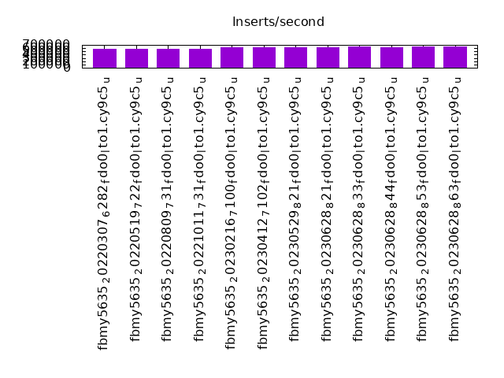
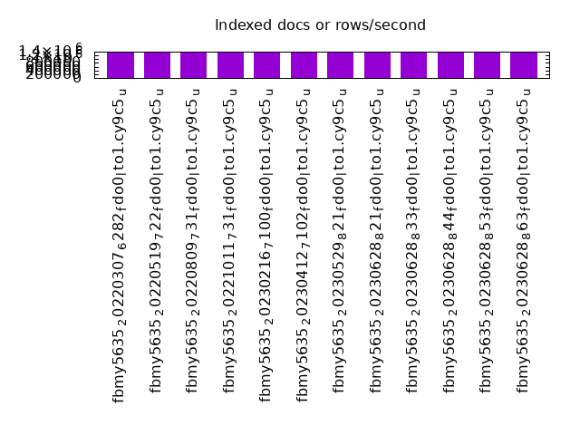
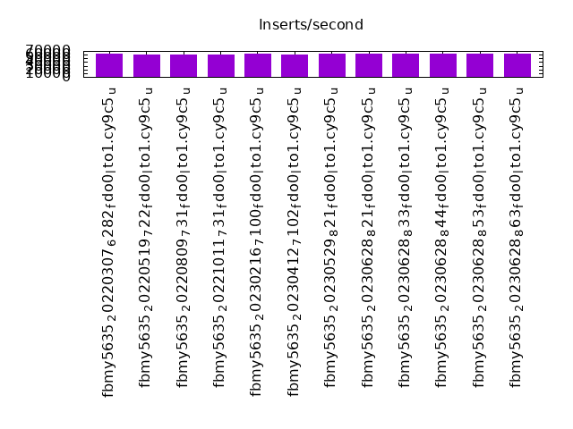
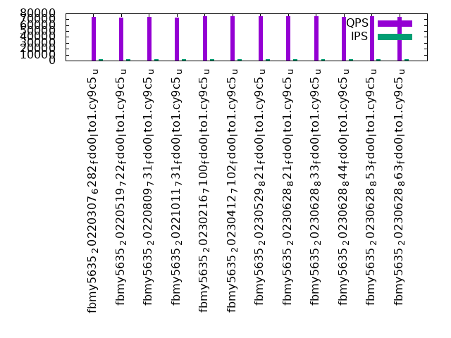
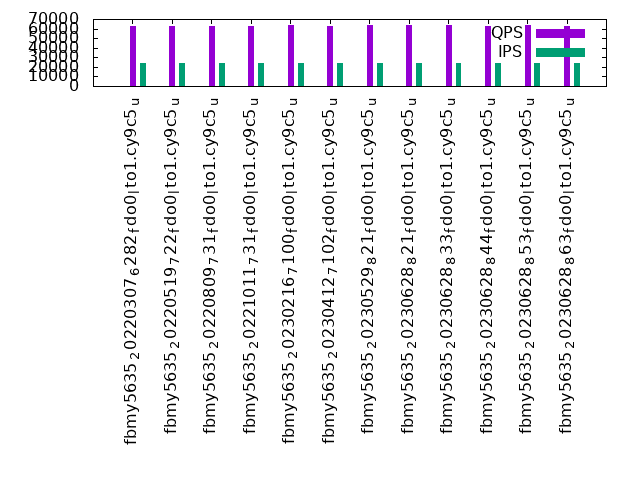

This is a report for the insert benchmark with 12000M docs and 24 client(s). It is generated by scripts (bash, awk, sed) and Tufte might not be impressed. An overview of the insert benchmark is here and a short update is here. Below, by DBMS, I mean DBMS+version.config. An example is my8020.c10b40 where my means MySQL, 8020 is version 8.0.20 and c10b40 is the name for the configuration file.
The test server has 80 cores, hyperthreads enabled, 256G RAM and fast NVMe with XFS. The benchmark was run with 24 clients and there were 1 or 3 connections per client (1 for queries or inserts without rate limits, 1+1 for rate limited inserts+deletes). There are 24 tables, with a client per table. It loads 500M rows per-table without secondary indexes, creates secondary indexes, then inserts 50M rows per-table with a delete per insert to avoid growing the table. It then does 3 read+write tests for 3600s each that do queries as fast as possible with 100, 500 and then 1000 inserts/second/client concurrent with the queries and 1000 deletes/second to avoid growing the table. The database is larger than memory.
The tested DBMS are:
The numbers are inserts/s for l.i0 and l.i1, indexed docs (or rows) /s for l.x and queries/s for q100, q500, q1000. The values are the average rate over the entire test for inserts (IPS) and queries (QPS). The range of values for IPS and QPS is split into 3 parts: bottom 25%, middle 50%, top 25%. Values in the bottom 25% have a red background, values in the top 25% have a green background and values in the middle have no color. A gray background is used for values that can be ignored because the DBMS did not sustain the target insert rate. Red backgrounds are not used when the minimum value is within 80% of the max value.
| dbms | l.i0 | l.x | l.i1 | q100.1 | q500.1 | q1000.1 |
|---|---|---|---|---|---|---|
| fbmy5635_20220307_6282_fdo0_lto1.cy9c5_u | 583430 | 1355331 | 62121 | 73536 | 69478 | 63060 |
| fbmy5635_20220519_722_fdo0_lto1.cy9c5_u | 577840 | 1354719 | 61196 | 73152 | 69118 | 62394 |
| fbmy5635_20220809_731_fdo0_lto1.cy9c5_u | 576258 | 1365354 | 61004 | 73867 | 69479 | 62652 |
| fbmy5635_20221011_731_fdo0_lto1.cy9c5_u | 581762 | 1380432 | 61400 | 73401 | 69568 | 62422 |
| fbmy5635_20230216_7100_fdo0_lto1.cy9c5_u | 632945 | 1380591 | 61830 | 74894 | 70390 | 64046 |
| fbmy5635_20230412_7102_fdo0_lto1.cy9c5_u | 636031 | 1355944 | 61491 | 75209 | 70278 | 63126 |
| fbmy5635_20230529_821_fdo0_lto1.cy9c5_u | 632945 | 1372695 | 61875 | 75308 | 71313 | 63889 |
| fbmy5635_20230628_821_fdo0_lto1.cy9c5_u | 630418 | 1377738 | 61624 | 75338 | 70636 | 63688 |
| fbmy5635_20230628_833_fdo0_lto1.cy9c5_u | 645578 | 1377264 | 62877 | 75350 | 70753 | 64136 |
| fbmy5635_20230628_844_fdo0_lto1.cy9c5_u | 639012 | 1374424 | 63002 | 74601 | 70234 | 62682 |
| fbmy5635_20230628_853_fdo0_lto1.cy9c5_u | 639761 | 1375843 | 63184 | 74794 | 70716 | 63287 |
| fbmy5635_20230628_863_fdo0_lto1.cy9c5_u | 643294 | 1387295 | 62663 | 74592 | 70071 | 62863 |
This table has relative throughput, throughput for the DBMS relative to the DBMS in the first line, using the absolute throughput from the previous table. Values less than 0.95 have a yellow background. Values greater than 1.05 have a blue background.
| dbms | l.i0 | l.x | l.i1 | q100.1 | q500.1 | q1000.1 |
|---|---|---|---|---|---|---|
| fbmy5635_20220307_6282_fdo0_lto1.cy9c5_u | 1.00 | 1.00 | 1.00 | 1.00 | 1.00 | 1.00 |
| fbmy5635_20220519_722_fdo0_lto1.cy9c5_u | 0.99 | 1.00 | 0.99 | 0.99 | 0.99 | 0.99 |
| fbmy5635_20220809_731_fdo0_lto1.cy9c5_u | 0.99 | 1.01 | 0.98 | 1.00 | 1.00 | 0.99 |
| fbmy5635_20221011_731_fdo0_lto1.cy9c5_u | 1.00 | 1.02 | 0.99 | 1.00 | 1.00 | 0.99 |
| fbmy5635_20230216_7100_fdo0_lto1.cy9c5_u | 1.08 | 1.02 | 1.00 | 1.02 | 1.01 | 1.02 |
| fbmy5635_20230412_7102_fdo0_lto1.cy9c5_u | 1.09 | 1.00 | 0.99 | 1.02 | 1.01 | 1.00 |
| fbmy5635_20230529_821_fdo0_lto1.cy9c5_u | 1.08 | 1.01 | 1.00 | 1.02 | 1.03 | 1.01 |
| fbmy5635_20230628_821_fdo0_lto1.cy9c5_u | 1.08 | 1.02 | 0.99 | 1.02 | 1.02 | 1.01 |
| fbmy5635_20230628_833_fdo0_lto1.cy9c5_u | 1.11 | 1.02 | 1.01 | 1.02 | 1.02 | 1.02 |
| fbmy5635_20230628_844_fdo0_lto1.cy9c5_u | 1.10 | 1.01 | 1.01 | 1.01 | 1.01 | 0.99 |
| fbmy5635_20230628_853_fdo0_lto1.cy9c5_u | 1.10 | 1.02 | 1.02 | 1.02 | 1.02 | 1.00 |
| fbmy5635_20230628_863_fdo0_lto1.cy9c5_u | 1.10 | 1.02 | 1.01 | 1.01 | 1.01 | 1.00 |
This lists the average rate of inserts/s for the tests that do inserts concurrent with queries. For such tests the query rate is listed in the table above. The read+write tests are setup so that the insert rate should match the target rate every second. Cells that are not at least 95% of the target have a red background to indicate a failure to satisfy the target.
| dbms | q100.1 | q500.1 | q1000.1 |
|---|---|---|---|
| fbmy5635_20220307_6282_fdo0_lto1.cy9c5_u | 2381 | 11907 | 23815 |
| fbmy5635_20220519_722_fdo0_lto1.cy9c5_u | 2381 | 11907 | 23828 |
| fbmy5635_20220809_731_fdo0_lto1.cy9c5_u | 2381 | 11907 | 23828 |
| fbmy5635_20221011_731_fdo0_lto1.cy9c5_u | 2381 | 11907 | 23828 |
| fbmy5635_20230216_7100_fdo0_lto1.cy9c5_u | 2375 | 11875 | 23756 |
| fbmy5635_20230412_7102_fdo0_lto1.cy9c5_u | 2375 | 11871 | 23743 |
| fbmy5635_20230529_821_fdo0_lto1.cy9c5_u | 2378 | 11884 | 23762 |
| fbmy5635_20230628_821_fdo0_lto1.cy9c5_u | 2376 | 11878 | 23749 |
| fbmy5635_20230628_833_fdo0_lto1.cy9c5_u | 2378 | 11888 | 23769 |
| fbmy5635_20230628_844_fdo0_lto1.cy9c5_u | 2378 | 11888 | 23769 |
| fbmy5635_20230628_853_fdo0_lto1.cy9c5_u | 2379 | 11891 | 23782 |
| fbmy5635_20230628_863_fdo0_lto1.cy9c5_u | 2376 | 11875 | 23743 |
| target | 2400 | 12000 | 24000 |
l.i0: load without secondary indexes. Graphs for performance per 1-second interval are here.
Average throughput:
Insert response time histogram: each cell has the percentage of responses that take <= the time in the header and max is the max response time in seconds. For the max column values in the top 25% of the range have a red background and in the bottom 25% of the range have a green background. The red background is not used when the min value is within 80% of the max value.
| dbms | 256us | 1ms | 4ms | 16ms | 64ms | 256ms | 1s | 4s | 16s | gt | max |
|---|---|---|---|---|---|---|---|---|---|---|---|
| fbmy5635_20220307_6282_fdo0_lto1.cy9c5_u | 0.003 | 57.720 | 42.234 | 0.004 | 0.039 | 0.117 | |||||
| fbmy5635_20220519_722_fdo0_lto1.cy9c5_u | 0.002 | 54.891 | 45.064 | 0.004 | 0.039 | nonzero | 0.329 | ||||
| fbmy5635_20220809_731_fdo0_lto1.cy9c5_u | 0.003 | 54.443 | 45.511 | 0.004 | 0.039 | nonzero | 0.266 | ||||
| fbmy5635_20221011_731_fdo0_lto1.cy9c5_u | 0.003 | 56.347 | 43.607 | 0.003 | 0.039 | nonzero | 0.264 | ||||
| fbmy5635_20230216_7100_fdo0_lto1.cy9c5_u | 0.003 | 75.099 | 24.855 | 0.002 | 0.041 | 0.116 | |||||
| fbmy5635_20230412_7102_fdo0_lto1.cy9c5_u | 0.002 | 75.717 | 24.237 | 0.003 | 0.040 | 0.109 | |||||
| fbmy5635_20230529_821_fdo0_lto1.cy9c5_u | 0.003 | 74.742 | 25.212 | 0.003 | 0.040 | 0.110 | |||||
| fbmy5635_20230628_821_fdo0_lto1.cy9c5_u | 0.003 | 74.358 | 25.584 | 0.013 | 0.042 | 0.162 | |||||
| fbmy5635_20230628_833_fdo0_lto1.cy9c5_u | 0.003 | 78.154 | 21.801 | 0.003 | 0.039 | 0.145 | |||||
| fbmy5635_20230628_844_fdo0_lto1.cy9c5_u | 0.003 | 76.448 | 23.507 | 0.003 | 0.039 | 0.102 | |||||
| fbmy5635_20230628_853_fdo0_lto1.cy9c5_u | 0.003 | 77.530 | 22.401 | 0.021 | 0.046 | 0.160 | |||||
| fbmy5635_20230628_863_fdo0_lto1.cy9c5_u | 0.003 | 77.686 | 22.268 | 0.004 | 0.039 | 0.164 |
Performance metrics for the DBMS listed above. Some are normalized by throughput, others are not. Legend for results is here.
ips qps rps rmbps wps wmbps rpq rkbpq wpi wkbpi csps cpups cspq cpupq dbgb1 dbgb2 rss maxop p50 p99 tag 583430 0 14 0.3 3032.3 339.7 0.000 0.000 0.005 0.596 484411 43.6 0.830 60 376.4 377.9 167.6 0.117 24376 15884 12000m.fbmy5635_20220307_6282_fdo0_lto1.cy9c5_u 577840 0 14 0.2 2979.7 333.4 0.000 0.000 0.005 0.591 487067 43.8 0.843 61 376.7 378.3 166.4 0.329 24076 15589 12000m.fbmy5635_20220519_722_fdo0_lto1.cy9c5_u 576258 0 24 0.3 3022.0 337.4 0.000 0.001 0.005 0.600 489302 43.8 0.849 61 376.4 378.0 169.3 0.266 24076 16084 12000m.fbmy5635_20220809_731_fdo0_lto1.cy9c5_u 581762 0 11 0.2 3002.3 335.2 0.000 0.000 0.005 0.590 490583 42.9 0.843 59 376.7 378.2 166.6 0.264 24176 16783 12000m.fbmy5635_20221011_731_fdo0_lto1.cy9c5_u 632945 0 40 0.3 2117.3 230.7 0.000 0.001 0.003 0.373 299545 38.4 0.473 49 376.4 377.8 97.4 0.116 26874 21079 12000m.fbmy5635_20230216_7100_fdo0_lto1.cy9c5_u 636031 0 24 0.3 2097.8 229.7 0.000 0.001 0.003 0.370 271689 37.9 0.427 48 376.4 377.8 95.9 0.109 26477 20480 12000m.fbmy5635_20230412_7102_fdo0_lto1.cy9c5_u 632945 0 24 0.2 2122.8 232.6 0.000 0.000 0.003 0.376 299469 38.5 0.473 49 376.4 377.7 97.8 0.110 26774 20477 12000m.fbmy5635_20230529_821_fdo0_lto1.cy9c5_u 630418 0 36 0.5 2097.3 228.9 0.000 0.001 0.003 0.372 280030 37.9 0.444 48 376.1 377.5 96.7 0.162 26573 19880 12000m.fbmy5635_20230628_821_fdo0_lto1.cy9c5_u 645578 0 59 0.5 2127.6 231.9 0.000 0.001 0.003 0.368 294032 38.7 0.455 48 376.1 377.4 95.5 0.145 26973 19680 12000m.fbmy5635_20230628_833_fdo0_lto1.cy9c5_u 639012 0 33 0.5 2118.7 232.2 0.000 0.001 0.003 0.372 318362 39.4 0.498 49 376.3 377.7 96.2 0.102 27073 20180 12000m.fbmy5635_20230628_844_fdo0_lto1.cy9c5_u 639761 0 147 1.0 2156.6 235.7 0.000 0.002 0.003 0.377 302094 38.7 0.472 48 376.3 377.6 98.2 0.160 27173 20080 12000m.fbmy5635_20230628_853_fdo0_lto1.cy9c5_u 643294 0 105 0.9 2169.0 237.4 0.000 0.001 0.003 0.378 282902 38.1 0.440 47 376.0 377.4 98.6 0.164 27174 20579 12000m.fbmy5635_20230628_863_fdo0_lto1.cy9c5_u
l.x: create secondary indexes.
Average throughput:
Performance metrics for the DBMS listed above. Some are normalized by throughput, others are not. Legend for results is here.
ips qps rps rmbps wps wmbps rpq rkbpq wpi wkbpi csps cpups cspq cpupq dbgb1 dbgb2 rss maxop p50 p99 tag 1355331 0 7856 200.8 1652.5 165.4 0.006 0.152 0.001 0.125 41329 30.6 0.030 18 772.0 773.5 206.8 0.004 NA NA 12000m.fbmy5635_20220307_6282_fdo0_lto1.cy9c5_u 1354719 0 8801 198.5 1655.3 164.3 0.006 0.150 0.001 0.124 40794 30.4 0.030 18 772.0 773.6 206.8 0.003 NA NA 12000m.fbmy5635_20220519_722_fdo0_lto1.cy9c5_u 1365354 0 7987 200.9 1667.7 166.0 0.006 0.151 0.001 0.125 43125 30.8 0.032 18 772.0 773.6 206.8 0.005 NA NA 12000m.fbmy5635_20220809_731_fdo0_lto1.cy9c5_u 1380432 0 5800 206.7 1683.4 173.5 0.004 0.153 0.001 0.129 33100 30.1 0.024 17 772.0 773.5 206.8 0.015 NA NA 12000m.fbmy5635_20221011_731_fdo0_lto1.cy9c5_u 1380591 0 5483 208.2 1685.6 171.5 0.004 0.154 0.001 0.127 32374 30.0 0.023 17 772.0 773.3 208.7 0.003 NA NA 12000m.fbmy5635_20230216_7100_fdo0_lto1.cy9c5_u 1355944 0 7013 198.7 1656.1 166.3 0.005 0.150 0.001 0.126 31818 29.6 0.023 17 771.9 773.3 208.7 0.003 NA NA 12000m.fbmy5635_20230412_7102_fdo0_lto1.cy9c5_u 1372695 0 7364 204.2 1676.2 165.5 0.005 0.152 0.001 0.123 32014 29.9 0.023 17 771.9 773.3 208.6 0.003 NA NA 12000m.fbmy5635_20230529_821_fdo0_lto1.cy9c5_u 1377738 0 6577 204.4 1682.6 165.2 0.005 0.152 0.001 0.123 32335 30.1 0.023 17 771.6 773.0 208.7 0.004 NA NA 12000m.fbmy5635_20230628_821_fdo0_lto1.cy9c5_u 1377264 0 8314 200.3 1683.5 169.6 0.006 0.149 0.001 0.126 27764 29.7 0.020 17 771.7 773.0 208.7 0.003 NA NA 12000m.fbmy5635_20230628_833_fdo0_lto1.cy9c5_u 1374424 0 7772 200.2 1679.3 170.3 0.006 0.149 0.001 0.127 28099 29.7 0.020 17 771.9 773.2 208.6 0.003 NA NA 12000m.fbmy5635_20230628_844_fdo0_lto1.cy9c5_u 1375843 0 6890 200.4 1682.7 171.2 0.005 0.149 0.001 0.127 24543 29.4 0.018 17 771.9 773.2 208.6 0.007 NA NA 12000m.fbmy5635_20230628_853_fdo0_lto1.cy9c5_u 1387295 0 6440 206.9 1694.1 174.9 0.005 0.153 0.001 0.129 24670 29.6 0.018 17 771.6 772.9 208.7 0.003 NA NA 12000m.fbmy5635_20230628_863_fdo0_lto1.cy9c5_u
l.i1: continue load after secondary indexes created. Graphs for performance per 1-second interval are here.
Average throughput:
Insert response time histogram: each cell has the percentage of responses that take <= the time in the header and max is the max response time in seconds. For the max column values in the top 25% of the range have a red background and in the bottom 25% of the range have a green background. The red background is not used when the min value is within 80% of the max value.
| dbms | 256us | 1ms | 4ms | 16ms | 64ms | 256ms | 1s | 4s | 16s | gt | max |
|---|---|---|---|---|---|---|---|---|---|---|---|
| fbmy5635_20220307_6282_fdo0_lto1.cy9c5_u | 0.034 | 17.465 | 82.494 | 0.008 | 0.232 | ||||||
| fbmy5635_20220519_722_fdo0_lto1.cy9c5_u | 0.033 | 15.775 | 84.183 | 0.009 | 0.242 | ||||||
| fbmy5635_20220809_731_fdo0_lto1.cy9c5_u | 0.036 | 15.254 | 84.701 | 0.009 | 0.226 | ||||||
| fbmy5635_20221011_731_fdo0_lto1.cy9c5_u | 0.035 | 15.609 | 84.349 | 0.007 | nonzero | 0.267 | |||||
| fbmy5635_20230216_7100_fdo0_lto1.cy9c5_u | 0.041 | 18.258 | 81.686 | 0.016 | 0.198 | ||||||
| fbmy5635_20230412_7102_fdo0_lto1.cy9c5_u | 0.052 | 17.385 | 82.548 | 0.014 | 0.217 | ||||||
| fbmy5635_20230529_821_fdo0_lto1.cy9c5_u | 0.037 | 18.056 | 81.895 | 0.011 | 0.162 | ||||||
| fbmy5635_20230628_821_fdo0_lto1.cy9c5_u | 0.043 | 17.737 | 82.208 | 0.011 | 0.189 | ||||||
| fbmy5635_20230628_833_fdo0_lto1.cy9c5_u | 0.048 | 19.954 | 79.987 | 0.011 | 0.183 | ||||||
| fbmy5635_20230628_844_fdo0_lto1.cy9c5_u | 0.043 | 20.079 | 79.867 | 0.011 | 0.174 | ||||||
| fbmy5635_20230628_853_fdo0_lto1.cy9c5_u | 0.045 | 20.359 | 79.588 | 0.009 | 0.193 | ||||||
| fbmy5635_20230628_863_fdo0_lto1.cy9c5_u | 0.042 | 19.434 | 80.513 | 0.011 | 0.176 |
Delete response time histogram: each cell has the percentage of responses that take <= the time in the header and max is the max response time in seconds. For the max column values in the top 25% of the range have a red background and in the bottom 25% of the range have a green background. The red background is not used when the min value is within 80% of the max value.
| dbms | 256us | 1ms | 4ms | 16ms | 64ms | 256ms | 1s | 4s | 16s | gt | max |
|---|---|---|---|---|---|---|---|---|---|---|---|
| fbmy5635_20220307_6282_fdo0_lto1.cy9c5_u | nonzero | 0.034 | 18.629 | 81.328 | 0.009 | nonzero | 0.293 | ||||
| fbmy5635_20220519_722_fdo0_lto1.cy9c5_u | nonzero | 0.033 | 16.339 | 83.617 | 0.010 | nonzero | 0.305 | ||||
| fbmy5635_20220809_731_fdo0_lto1.cy9c5_u | 0.036 | 15.824 | 84.129 | 0.010 | nonzero | 0.296 | |||||
| fbmy5635_20221011_731_fdo0_lto1.cy9c5_u | 0.036 | 16.246 | 83.711 | 0.008 | nonzero | 0.267 | |||||
| fbmy5635_20230216_7100_fdo0_lto1.cy9c5_u | 0.042 | 17.453 | 82.488 | 0.017 | nonzero | 0.312 | |||||
| fbmy5635_20230412_7102_fdo0_lto1.cy9c5_u | 0.054 | 16.945 | 82.985 | 0.016 | 0.220 | ||||||
| fbmy5635_20230529_821_fdo0_lto1.cy9c5_u | 0.039 | 17.576 | 82.373 | 0.013 | 0.162 | ||||||
| fbmy5635_20230628_821_fdo0_lto1.cy9c5_u | 0.045 | 17.125 | 82.816 | 0.013 | 0.189 | ||||||
| fbmy5635_20230628_833_fdo0_lto1.cy9c5_u | 0.049 | 18.982 | 80.957 | 0.013 | 0.180 | ||||||
| fbmy5635_20230628_844_fdo0_lto1.cy9c5_u | 0.045 | 19.277 | 80.666 | 0.012 | 0.175 | ||||||
| fbmy5635_20230628_853_fdo0_lto1.cy9c5_u | 0.047 | 19.517 | 80.426 | 0.010 | 0.191 | ||||||
| fbmy5635_20230628_863_fdo0_lto1.cy9c5_u | 0.043 | 18.475 | 81.469 | 0.013 | 0.176 |
Performance metrics for the DBMS listed above. Some are normalized by throughput, others are not. Legend for results is here.
ips qps rps rmbps wps wmbps rpq rkbpq wpi wkbpi csps cpups cspq cpupq dbgb1 dbgb2 rss maxop p50 p99 tag 62121 0 2503 26.9 2276.4 253.9 0.040 0.443 0.037 4.185 129759 19.5 2.089 251 841.3 841.9 180.0 0.232 2597 2248 12000m.fbmy5635_20220307_6282_fdo0_lto1.cy9c5_u 61196 0 2356 25.9 2240.6 251.4 0.038 0.433 0.037 4.207 126227 19.4 2.063 254 839.6 840.2 178.7 0.242 2547 2248 12000m.fbmy5635_20220519_722_fdo0_lto1.cy9c5_u 61004 0 1552 22.8 2239.6 249.3 0.025 0.383 0.037 4.186 124655 19.1 2.043 250 835.2 835.8 180.1 0.226 2547 2248 12000m.fbmy5635_20220809_731_fdo0_lto1.cy9c5_u 61400 0 1026 21.0 2256.2 256.2 0.017 0.351 0.037 4.272 121441 18.7 1.978 244 835.9 836.4 180.2 0.267 2548 2248 12000m.fbmy5635_20221011_731_fdo0_lto1.cy9c5_u 61830 0 840 15.5 1766.9 198.2 0.014 0.257 0.029 3.283 108522 17.1 1.755 221 845.8 846.2 182.0 0.198 2597 1948 12000m.fbmy5635_20230216_7100_fdo0_lto1.cy9c5_u 61491 0 828 15.4 1766.6 198.2 0.013 0.256 0.029 3.301 108920 17.2 1.771 224 844.3 844.7 181.9 0.217 2597 1998 12000m.fbmy5635_20230412_7102_fdo0_lto1.cy9c5_u 61875 0 846 15.3 1757.1 197.0 0.014 0.254 0.028 3.260 110036 17.2 1.778 222 844.5 844.9 181.9 0.162 2597 2048 12000m.fbmy5635_20230529_821_fdo0_lto1.cy9c5_u 61624 0 837 15.4 1759.6 198.0 0.014 0.256 0.029 3.290 110145 17.3 1.787 225 841.4 841.8 182.0 0.189 2597 1998 12000m.fbmy5635_20230628_821_fdo0_lto1.cy9c5_u 62877 0 856 15.8 1790.7 200.6 0.014 0.258 0.028 3.268 111454 17.4 1.773 221 843.3 843.7 182.0 0.183 2647 2048 12000m.fbmy5635_20230628_833_fdo0_lto1.cy9c5_u 63002 0 863 15.7 1783.1 199.9 0.014 0.255 0.028 3.249 111345 17.7 1.767 225 841.6 841.9 181.9 0.174 2647 2048 12000m.fbmy5635_20230628_844_fdo0_lto1.cy9c5_u 63184 0 8806 49.5 1797.2 201.1 0.139 0.802 0.028 3.259 122528 17.4 1.939 220 844.6 844.9 181.9 0.193 2647 2098 12000m.fbmy5635_20230628_853_fdo0_lto1.cy9c5_u 62663 0 2844 27.8 1790.8 201.6 0.045 0.454 0.029 3.294 110180 17.0 1.758 217 841.3 841.7 182.0 0.176 2647 2048 12000m.fbmy5635_20230628_863_fdo0_lto1.cy9c5_u
q100.1: range queries with 100 insert/s per client. Graphs for performance per 1-second interval are here.
Average throughput:
Query response time histogram: each cell has the percentage of responses that take <= the time in the header and max is the max response time in seconds. For max values in the top 25% of the range have a red background and in the bottom 25% of the range have a green background. The red background is not used when the min value is within 80% of the max value.
| dbms | 256us | 1ms | 4ms | 16ms | 64ms | 256ms | 1s | 4s | 16s | gt | max |
|---|---|---|---|---|---|---|---|---|---|---|---|
| fbmy5635_20220307_6282_fdo0_lto1.cy9c5_u | 33.064 | 66.785 | 0.148 | 0.003 | nonzero | nonzero | 0.077 | ||||
| fbmy5635_20220519_722_fdo0_lto1.cy9c5_u | 32.499 | 67.354 | 0.144 | 0.003 | nonzero | nonzero | 0.082 | ||||
| fbmy5635_20220809_731_fdo0_lto1.cy9c5_u | 33.794 | 66.063 | 0.141 | 0.003 | nonzero | nonzero | 0.077 | ||||
| fbmy5635_20221011_731_fdo0_lto1.cy9c5_u | 33.690 | 66.136 | 0.171 | 0.003 | nonzero | nonzero | 0.090 | ||||
| fbmy5635_20230216_7100_fdo0_lto1.cy9c5_u | 33.219 | 66.679 | 0.091 | 0.009 | 0.001 | nonzero | 0.082 | ||||
| fbmy5635_20230412_7102_fdo0_lto1.cy9c5_u | 34.024 | 65.877 | 0.090 | 0.008 | 0.001 | nonzero | 0.072 | ||||
| fbmy5635_20230529_821_fdo0_lto1.cy9c5_u | 33.188 | 66.704 | 0.099 | 0.009 | nonzero | nonzero | 0.083 | ||||
| fbmy5635_20230628_821_fdo0_lto1.cy9c5_u | 33.696 | 66.201 | 0.094 | 0.009 | 0.001 | nonzero | 0.078 | ||||
| fbmy5635_20230628_833_fdo0_lto1.cy9c5_u | 33.418 | 66.477 | 0.094 | 0.010 | nonzero | nonzero | 0.080 | ||||
| fbmy5635_20230628_844_fdo0_lto1.cy9c5_u | 32.378 | 67.504 | 0.107 | 0.011 | nonzero | nonzero | 0.085 | ||||
| fbmy5635_20230628_853_fdo0_lto1.cy9c5_u | 32.508 | 67.378 | 0.103 | 0.010 | nonzero | nonzero | 0.092 | ||||
| fbmy5635_20230628_863_fdo0_lto1.cy9c5_u | 33.132 | 66.768 | 0.090 | 0.010 | 0.001 | nonzero | 0.084 |
Insert response time histogram: each cell has the percentage of responses that take <= the time in the header and max is the max response time in seconds. For max values in the top 25% of the range have a red background and in the bottom 25% of the range have a green background. The red background is not used when the min value is within 80% of the max value.
| dbms | 256us | 1ms | 4ms | 16ms | 64ms | 256ms | 1s | 4s | 16s | gt | max |
|---|---|---|---|---|---|---|---|---|---|---|---|
| fbmy5635_20220307_6282_fdo0_lto1.cy9c5_u | 99.966 | 0.034 | 0.013 | ||||||||
| fbmy5635_20220519_722_fdo0_lto1.cy9c5_u | 99.960 | 0.040 | 0.012 | ||||||||
| fbmy5635_20220809_731_fdo0_lto1.cy9c5_u | 99.946 | 0.054 | 0.012 | ||||||||
| fbmy5635_20221011_731_fdo0_lto1.cy9c5_u | 99.961 | 0.035 | 0.004 | 0.058 | |||||||
| fbmy5635_20230216_7100_fdo0_lto1.cy9c5_u | 99.758 | 0.223 | 0.018 | 0.002 | 0.069 | ||||||
| fbmy5635_20230412_7102_fdo0_lto1.cy9c5_u | 99.808 | 0.182 | 0.010 | 0.044 | |||||||
| fbmy5635_20230529_821_fdo0_lto1.cy9c5_u | 0.002 | 99.796 | 0.188 | 0.013 | 0.001 | 0.071 | |||||
| fbmy5635_20230628_821_fdo0_lto1.cy9c5_u | 0.001 | 99.775 | 0.209 | 0.014 | 0.001 | 0.068 | |||||
| fbmy5635_20230628_833_fdo0_lto1.cy9c5_u | 0.002 | 99.782 | 0.206 | 0.010 | 0.001 | 0.074 | |||||
| fbmy5635_20230628_844_fdo0_lto1.cy9c5_u | 0.001 | 99.764 | 0.230 | 0.005 | 0.019 | ||||||
| fbmy5635_20230628_853_fdo0_lto1.cy9c5_u | 0.001 | 99.802 | 0.192 | 0.005 | 0.001 | 0.077 | |||||
| fbmy5635_20230628_863_fdo0_lto1.cy9c5_u | 99.780 | 0.208 | 0.010 | 0.002 | 0.077 |
Delete response time histogram: each cell has the percentage of responses that take <= the time in the header and max is the max response time in seconds. For max values in the top 25% of the range have a red background and in the bottom 25% of the range have a green background. The red background is not used when the min value is within 80% of the max value.
| dbms | 256us | 1ms | 4ms | 16ms | 64ms | 256ms | 1s | 4s | 16s | gt | max |
|---|---|---|---|---|---|---|---|---|---|---|---|
| fbmy5635_20220307_6282_fdo0_lto1.cy9c5_u | 99.959 | 0.036 | 0.003 | 0.001 | 0.073 | ||||||
| fbmy5635_20220519_722_fdo0_lto1.cy9c5_u | 99.957 | 0.039 | 0.003 | 0.001 | 0.088 | ||||||
| fbmy5635_20220809_731_fdo0_lto1.cy9c5_u | 99.943 | 0.056 | 0.002 | 0.063 | |||||||
| fbmy5635_20221011_731_fdo0_lto1.cy9c5_u | 99.951 | 0.039 | 0.008 | 0.002 | 0.075 | ||||||
| fbmy5635_20230216_7100_fdo0_lto1.cy9c5_u | 99.730 | 0.234 | 0.032 | 0.004 | 0.075 | ||||||
| fbmy5635_20230412_7102_fdo0_lto1.cy9c5_u | 99.795 | 0.191 | 0.014 | 0.001 | 0.072 | ||||||
| fbmy5635_20230529_821_fdo0_lto1.cy9c5_u | 99.767 | 0.214 | 0.016 | 0.003 | 0.074 | ||||||
| fbmy5635_20230628_821_fdo0_lto1.cy9c5_u | 99.755 | 0.229 | 0.016 | 0.042 | |||||||
| fbmy5635_20230628_833_fdo0_lto1.cy9c5_u | 99.760 | 0.221 | 0.018 | 0.001 | 0.076 | ||||||
| fbmy5635_20230628_844_fdo0_lto1.cy9c5_u | 99.740 | 0.251 | 0.009 | 0.056 | |||||||
| fbmy5635_20230628_853_fdo0_lto1.cy9c5_u | 99.779 | 0.215 | 0.005 | 0.001 | 0.080 | ||||||
| fbmy5635_20230628_863_fdo0_lto1.cy9c5_u | 99.755 | 0.220 | 0.022 | 0.003 | 0.080 |
Performance metrics for the DBMS listed above. Some are normalized by throughput, others are not. Legend for results is here.
ips qps rps rmbps wps wmbps rpq rkbpq wpi wkbpi csps cpups cspq cpupq dbgb1 dbgb2 rss maxop p50 p99 tag 2381 73536 3662 28.2 120.5 12.7 0.050 0.393 0.051 5.475 346035 31.8 4.706 346 833.9 834.3 182.0 0.077 3117 2078 12000m.fbmy5635_20220307_6282_fdo0_lto1.cy9c5_u 2381 73152 3669 28.1 118.3 12.6 0.050 0.393 0.050 5.435 343000 31.9 4.689 349 834.5 834.9 181.9 0.082 3103 2110 12000m.fbmy5635_20220519_722_fdo0_lto1.cy9c5_u 2381 73867 3402 26.9 122.9 12.8 0.046 0.373 0.052 5.490 341887 31.1 4.628 337 834.2 834.6 181.8 0.077 3069 1999 12000m.fbmy5635_20220809_731_fdo0_lto1.cy9c5_u 2381 73401 3570 28.3 122.2 12.7 0.049 0.395 0.051 5.480 339610 31.1 4.627 339 835.1 835.6 181.9 0.090 3021 1918 12000m.fbmy5635_20221011_731_fdo0_lto1.cy9c5_u 2375 74894 3048 26.9 103.5 10.8 0.041 0.368 0.044 4.666 337530 31.0 4.507 331 840.9 841.1 182.8 0.082 3212 2142 12000m.fbmy5635_20230216_7100_fdo0_lto1.cy9c5_u 2375 75209 2996 26.6 104.7 10.8 0.040 0.362 0.044 4.659 339388 31.0 4.513 330 840.6 840.8 183.1 0.072 3213 2078 12000m.fbmy5635_20230412_7102_fdo0_lto1.cy9c5_u 2378 75308 3165 27.1 108.6 11.3 0.042 0.368 0.046 4.855 340358 31.1 4.520 330 840.6 840.8 182.9 0.083 3196 2206 12000m.fbmy5635_20230529_821_fdo0_lto1.cy9c5_u 2376 75338 3038 26.8 106.9 11.1 0.040 0.364 0.045 4.772 340530 31.2 4.520 331 840.3 840.5 182.6 0.078 3197 2142 12000m.fbmy5635_20230628_821_fdo0_lto1.cy9c5_u 2378 75350 3022 26.6 109.2 11.2 0.040 0.361 0.046 4.831 340105 30.9 4.514 328 840.4 840.6 182.7 0.080 3165 2078 12000m.fbmy5635_20230628_833_fdo0_lto1.cy9c5_u 2378 74601 3082 26.8 108.0 11.2 0.041 0.368 0.045 4.823 335520 31.0 4.498 332 840.5 840.7 183.0 0.085 3149 2126 12000m.fbmy5635_20230628_844_fdo0_lto1.cy9c5_u 2379 74794 4064 30.5 113.3 11.3 0.054 0.417 0.048 4.882 334445 30.8 4.472 329 840.6 840.7 182.9 0.092 3133 2078 12000m.fbmy5635_20230628_853_fdo0_lto1.cy9c5_u 2376 74592 3262 27.6 107.0 10.8 0.044 0.379 0.045 4.645 332689 30.8 4.460 330 840.2 840.4 182.7 0.084 3244 2222 12000m.fbmy5635_20230628_863_fdo0_lto1.cy9c5_u
q500.1: range queries with 500 insert/s per client. Graphs for performance per 1-second interval are here.
Average throughput:
Query response time histogram: each cell has the percentage of responses that take <= the time in the header and max is the max response time in seconds. For max values in the top 25% of the range have a red background and in the bottom 25% of the range have a green background. The red background is not used when the min value is within 80% of the max value.
| dbms | 256us | 1ms | 4ms | 16ms | 64ms | 256ms | 1s | 4s | 16s | gt | max |
|---|---|---|---|---|---|---|---|---|---|---|---|
| fbmy5635_20220307_6282_fdo0_lto1.cy9c5_u | 22.585 | 77.384 | 0.018 | 0.013 | nonzero | 0.001 | 0.079 | ||||
| fbmy5635_20220519_722_fdo0_lto1.cy9c5_u | 21.828 | 78.141 | 0.018 | 0.013 | nonzero | 0.001 | 0.130 | ||||
| fbmy5635_20220809_731_fdo0_lto1.cy9c5_u | 22.375 | 77.594 | 0.018 | 0.013 | nonzero | 0.001 | 0.104 | ||||
| fbmy5635_20221011_731_fdo0_lto1.cy9c5_u | 23.201 | 76.768 | 0.019 | 0.012 | nonzero | nonzero | 0.078 | ||||
| fbmy5635_20230216_7100_fdo0_lto1.cy9c5_u | 23.654 | 76.277 | 0.028 | 0.033 | 0.009 | 0.040 | |||||
| fbmy5635_20230412_7102_fdo0_lto1.cy9c5_u | 23.532 | 76.397 | 0.028 | 0.035 | 0.008 | nonzero | 0.070 | ||||
| fbmy5635_20230529_821_fdo0_lto1.cy9c5_u | 24.364 | 75.570 | 0.030 | 0.033 | 0.003 | 0.025 | |||||
| fbmy5635_20230628_821_fdo0_lto1.cy9c5_u | 23.831 | 76.098 | 0.030 | 0.035 | 0.006 | 0.032 | |||||
| fbmy5635_20230628_833_fdo0_lto1.cy9c5_u | 23.721 | 76.207 | 0.029 | 0.037 | 0.005 | 0.049 | |||||
| fbmy5635_20230628_844_fdo0_lto1.cy9c5_u | 22.379 | 77.554 | 0.028 | 0.035 | 0.004 | nonzero | 0.067 | ||||
| fbmy5635_20230628_853_fdo0_lto1.cy9c5_u | 22.913 | 77.019 | 0.032 | 0.035 | 0.001 | 0.032 | |||||
| fbmy5635_20230628_863_fdo0_lto1.cy9c5_u | 22.855 | 77.076 | 0.030 | 0.034 | 0.005 | 0.050 |
Insert response time histogram: each cell has the percentage of responses that take <= the time in the header and max is the max response time in seconds. For max values in the top 25% of the range have a red background and in the bottom 25% of the range have a green background. The red background is not used when the min value is within 80% of the max value.
| dbms | 256us | 1ms | 4ms | 16ms | 64ms | 256ms | 1s | 4s | 16s | gt | max |
|---|---|---|---|---|---|---|---|---|---|---|---|
| fbmy5635_20220307_6282_fdo0_lto1.cy9c5_u | 99.056 | 0.940 | 0.002 | 0.001 | 0.075 | ||||||
| fbmy5635_20220519_722_fdo0_lto1.cy9c5_u | 99.667 | 0.330 | 0.002 | 0.001 | 0.080 | ||||||
| fbmy5635_20220809_731_fdo0_lto1.cy9c5_u | 89.235 | 10.762 | 0.002 | 0.001 | 0.082 | ||||||
| fbmy5635_20221011_731_fdo0_lto1.cy9c5_u | 99.849 | 0.150 | 0.001 | nonzero | 0.077 | ||||||
| fbmy5635_20230216_7100_fdo0_lto1.cy9c5_u | nonzero | 99.480 | 0.408 | 0.112 | nonzero | 0.071 | |||||
| fbmy5635_20230412_7102_fdo0_lto1.cy9c5_u | 99.287 | 0.622 | 0.092 | nonzero | 0.069 | ||||||
| fbmy5635_20230529_821_fdo0_lto1.cy9c5_u | 95.025 | 4.865 | 0.110 | nonzero | 0.089 | ||||||
| fbmy5635_20230628_821_fdo0_lto1.cy9c5_u | 99.605 | 0.332 | 0.063 | nonzero | 0.071 | ||||||
| fbmy5635_20230628_833_fdo0_lto1.cy9c5_u | nonzero | 99.539 | 0.393 | 0.068 | nonzero | 0.083 | |||||
| fbmy5635_20230628_844_fdo0_lto1.cy9c5_u | nonzero | 99.517 | 0.427 | 0.055 | nonzero | 0.083 | |||||
| fbmy5635_20230628_853_fdo0_lto1.cy9c5_u | nonzero | 99.651 | 0.331 | 0.018 | 0.042 | ||||||
| fbmy5635_20230628_863_fdo0_lto1.cy9c5_u | 0.001 | 99.639 | 0.314 | 0.046 | nonzero | 0.084 |
Delete response time histogram: each cell has the percentage of responses that take <= the time in the header and max is the max response time in seconds. For max values in the top 25% of the range have a red background and in the bottom 25% of the range have a green background. The red background is not used when the min value is within 80% of the max value.
| dbms | 256us | 1ms | 4ms | 16ms | 64ms | 256ms | 1s | 4s | 16s | gt | max |
|---|---|---|---|---|---|---|---|---|---|---|---|
| fbmy5635_20220307_6282_fdo0_lto1.cy9c5_u | 99.250 | 0.736 | 0.010 | 0.004 | 0.117 | ||||||
| fbmy5635_20220519_722_fdo0_lto1.cy9c5_u | 99.706 | 0.278 | 0.011 | 0.004 | 0.098 | ||||||
| fbmy5635_20220809_731_fdo0_lto1.cy9c5_u | 90.149 | 9.837 | 0.010 | 0.004 | 0.085 | ||||||
| fbmy5635_20221011_731_fdo0_lto1.cy9c5_u | 99.856 | 0.135 | 0.006 | 0.002 | 0.102 | ||||||
| fbmy5635_20230216_7100_fdo0_lto1.cy9c5_u | 99.442 | 0.419 | 0.139 | nonzero | 0.071 | ||||||
| fbmy5635_20230412_7102_fdo0_lto1.cy9c5_u | 99.154 | 0.734 | 0.112 | nonzero | 0.069 | ||||||
| fbmy5635_20230529_821_fdo0_lto1.cy9c5_u | 95.216 | 4.661 | 0.123 | nonzero | 0.083 | ||||||
| fbmy5635_20230628_821_fdo0_lto1.cy9c5_u | 99.571 | 0.347 | 0.082 | nonzero | 0.074 | ||||||
| fbmy5635_20230628_833_fdo0_lto1.cy9c5_u | 99.514 | 0.398 | 0.088 | nonzero | 0.082 | ||||||
| fbmy5635_20230628_844_fdo0_lto1.cy9c5_u | 99.477 | 0.452 | 0.070 | nonzero | 0.083 | ||||||
| fbmy5635_20230628_853_fdo0_lto1.cy9c5_u | 99.621 | 0.358 | 0.021 | 0.046 | |||||||
| fbmy5635_20230628_863_fdo0_lto1.cy9c5_u | 99.603 | 0.334 | 0.063 | nonzero | 0.085 |
Performance metrics for the DBMS listed above. Some are normalized by throughput, others are not. Legend for results is here.
ips qps rps rmbps wps wmbps rpq rkbpq wpi wkbpi csps cpups cspq cpupq dbgb1 dbgb2 rss maxop p50 p99 tag 11907 69478 1274 9.2 474.2 53.3 0.018 0.136 0.040 4.585 337979 34.3 4.865 395 835.3 837.0 186.0 0.079 2893 2477 12000m.fbmy5635_20220307_6282_fdo0_lto1.cy9c5_u 11907 69118 1240 9.1 483.4 54.4 0.018 0.135 0.041 4.679 336897 34.5 4.874 399 836.0 837.7 185.6 0.130 2893 2477 12000m.fbmy5635_20220519_722_fdo0_lto1.cy9c5_u 11907 69479 1077 8.5 487.0 54.8 0.015 0.125 0.041 4.715 335033 33.7 4.822 388 835.3 836.9 185.7 0.104 2814 2429 12000m.fbmy5635_20220809_731_fdo0_lto1.cy9c5_u 11907 69568 1232 9.1 485.4 54.5 0.018 0.133 0.041 4.685 332874 33.6 4.785 386 836.9 838.6 185.6 0.078 2829 2477 12000m.fbmy5635_20221011_731_fdo0_lto1.cy9c5_u 11875 70390 675 9.5 381.4 41.7 0.010 0.138 0.032 3.597 324260 33.2 4.607 377 843.0 844.5 185.8 0.040 2989 2126 12000m.fbmy5635_20230216_7100_fdo0_lto1.cy9c5_u 11871 70278 666 9.2 380.2 40.8 0.009 0.134 0.032 3.517 324660 33.1 4.620 377 843.1 844.5 186.0 0.070 2973 2142 12000m.fbmy5635_20230412_7102_fdo0_lto1.cy9c5_u 11884 71313 658 8.1 369.4 40.4 0.009 0.116 0.031 3.479 330101 33.0 4.629 370 844.8 846.3 185.9 0.025 2989 2206 12000m.fbmy5635_20230529_821_fdo0_lto1.cy9c5_u 11878 70636 696 9.6 383.1 41.3 0.010 0.139 0.032 3.560 326586 33.4 4.624 378 841.7 843.2 185.8 0.032 2989 2174 12000m.fbmy5635_20230628_821_fdo0_lto1.cy9c5_u 11888 70753 699 9.2 375.8 40.6 0.010 0.134 0.032 3.501 326480 33.0 4.614 373 843.5 844.9 185.8 0.049 2973 2126 12000m.fbmy5635_20230628_833_fdo0_lto1.cy9c5_u 11888 70234 712 8.9 377.7 40.8 0.010 0.130 0.032 3.518 323516 33.1 4.606 377 843.7 845.2 185.9 0.067 2973 2142 12000m.fbmy5635_20230628_844_fdo0_lto1.cy9c5_u 11891 70716 2215 14.9 371.1 40.5 0.031 0.215 0.031 3.491 323424 32.8 4.574 371 844.3 845.7 185.7 0.032 2941 2254 12000m.fbmy5635_20230628_853_fdo0_lto1.cy9c5_u 11875 70071 1284 13.0 393.9 42.0 0.018 0.190 0.033 3.619 319871 33.0 4.565 377 841.8 843.2 185.8 0.050 3021 2222 12000m.fbmy5635_20230628_863_fdo0_lto1.cy9c5_u
q1000.1: range queries with 1000 insert/s per client. Graphs for performance per 1-second interval are here.
Average throughput:
Query response time histogram: each cell has the percentage of responses that take <= the time in the header and max is the max response time in seconds. For max values in the top 25% of the range have a red background and in the bottom 25% of the range have a green background. The red background is not used when the min value is within 80% of the max value.
| dbms | 256us | 1ms | 4ms | 16ms | 64ms | 256ms | 1s | 4s | 16s | gt | max |
|---|---|---|---|---|---|---|---|---|---|---|---|
| fbmy5635_20220307_6282_fdo0_lto1.cy9c5_u | 10.786 | 89.130 | 0.056 | 0.028 | nonzero | nonzero | 0.068 | ||||
| fbmy5635_20220519_722_fdo0_lto1.cy9c5_u | 9.545 | 90.362 | 0.065 | 0.029 | nonzero | nonzero | 0.073 | ||||
| fbmy5635_20220809_731_fdo0_lto1.cy9c5_u | 10.172 | 89.734 | 0.065 | 0.029 | nonzero | nonzero | 0.069 | ||||
| fbmy5635_20221011_731_fdo0_lto1.cy9c5_u | 9.888 | 90.019 | 0.064 | 0.028 | nonzero | nonzero | 0.070 | ||||
| fbmy5635_20230216_7100_fdo0_lto1.cy9c5_u | 12.031 | 87.882 | 0.038 | 0.023 | 0.025 | 0.060 | |||||
| fbmy5635_20230412_7102_fdo0_lto1.cy9c5_u | 11.244 | 88.660 | 0.046 | 0.024 | 0.026 | nonzero | 0.079 | ||||
| fbmy5635_20230529_821_fdo0_lto1.cy9c5_u | 11.353 | 88.556 | 0.045 | 0.029 | 0.017 | nonzero | 0.071 | ||||
| fbmy5635_20230628_821_fdo0_lto1.cy9c5_u | 11.687 | 88.216 | 0.047 | 0.029 | 0.020 | nonzero | 0.073 | ||||
| fbmy5635_20230628_833_fdo0_lto1.cy9c5_u | 11.719 | 88.192 | 0.039 | 0.030 | 0.021 | nonzero | 0.068 | ||||
| fbmy5635_20230628_844_fdo0_lto1.cy9c5_u | 9.492 | 90.407 | 0.050 | 0.031 | 0.019 | 0.060 | |||||
| fbmy5635_20230628_853_fdo0_lto1.cy9c5_u | 10.365 | 89.540 | 0.049 | 0.036 | 0.010 | nonzero | 0.076 | ||||
| fbmy5635_20230628_863_fdo0_lto1.cy9c5_u | 10.572 | 89.329 | 0.050 | 0.028 | 0.021 | 0.057 |
Insert response time histogram: each cell has the percentage of responses that take <= the time in the header and max is the max response time in seconds. For max values in the top 25% of the range have a red background and in the bottom 25% of the range have a green background. The red background is not used when the min value is within 80% of the max value.
| dbms | 256us | 1ms | 4ms | 16ms | 64ms | 256ms | 1s | 4s | 16s | gt | max |
|---|---|---|---|---|---|---|---|---|---|---|---|
| fbmy5635_20220307_6282_fdo0_lto1.cy9c5_u | 22.230 | 68.164 | 9.604 | 0.002 | 0.094 | ||||||
| fbmy5635_20220519_722_fdo0_lto1.cy9c5_u | 12.650 | 35.660 | 51.686 | 0.004 | 0.109 | ||||||
| fbmy5635_20220809_731_fdo0_lto1.cy9c5_u | 16.601 | 30.946 | 52.452 | 0.001 | 0.104 | ||||||
| fbmy5635_20221011_731_fdo0_lto1.cy9c5_u | 14.052 | 32.716 | 53.230 | 0.001 | 0.078 | ||||||
| fbmy5635_20230216_7100_fdo0_lto1.cy9c5_u | 24.915 | 69.583 | 5.498 | 0.004 | 0.121 | ||||||
| fbmy5635_20230412_7102_fdo0_lto1.cy9c5_u | 15.501 | 27.523 | 56.968 | 0.009 | 0.077 | ||||||
| fbmy5635_20230529_821_fdo0_lto1.cy9c5_u | 25.078 | 41.934 | 32.987 | 0.001 | 0.085 | ||||||
| fbmy5635_20230628_821_fdo0_lto1.cy9c5_u | 22.839 | 25.585 | 51.568 | 0.008 | 0.089 | ||||||
| fbmy5635_20230628_833_fdo0_lto1.cy9c5_u | 22.740 | 72.894 | 4.365 | 0.001 | 0.078 | ||||||
| fbmy5635_20230628_844_fdo0_lto1.cy9c5_u | 19.536 | 38.326 | 42.130 | 0.007 | 0.077 | ||||||
| fbmy5635_20230628_853_fdo0_lto1.cy9c5_u | 40.729 | 37.375 | 21.894 | 0.003 | 0.093 | ||||||
| fbmy5635_20230628_863_fdo0_lto1.cy9c5_u | 21.151 | 29.762 | 49.083 | 0.003 | 0.087 |
Delete response time histogram: each cell has the percentage of responses that take <= the time in the header and max is the max response time in seconds. For max values in the top 25% of the range have a red background and in the bottom 25% of the range have a green background. The red background is not used when the min value is within 80% of the max value.
| dbms | 256us | 1ms | 4ms | 16ms | 64ms | 256ms | 1s | 4s | 16s | gt | max |
|---|---|---|---|---|---|---|---|---|---|---|---|
| fbmy5635_20220307_6282_fdo0_lto1.cy9c5_u | 22.684 | 67.957 | 9.356 | 0.002 | 0.094 | ||||||
| fbmy5635_20220519_722_fdo0_lto1.cy9c5_u | 12.839 | 36.262 | 50.894 | 0.005 | 0.122 | ||||||
| fbmy5635_20220809_731_fdo0_lto1.cy9c5_u | 16.692 | 31.736 | 51.569 | 0.002 | 0.130 | ||||||
| fbmy5635_20221011_731_fdo0_lto1.cy9c5_u | 14.141 | 33.452 | 52.406 | 0.002 | 0.131 | ||||||
| fbmy5635_20230216_7100_fdo0_lto1.cy9c5_u | 24.139 | 69.996 | 5.860 | 0.004 | 0.121 | ||||||
| fbmy5635_20230412_7102_fdo0_lto1.cy9c5_u | 15.133 | 26.962 | 57.895 | 0.009 | 0.087 | ||||||
| fbmy5635_20230529_821_fdo0_lto1.cy9c5_u | 23.544 | 42.832 | 33.622 | 0.001 | 0.085 | ||||||
| fbmy5635_20230628_821_fdo0_lto1.cy9c5_u | 22.367 | 25.158 | 52.468 | 0.008 | 0.089 | ||||||
| fbmy5635_20230628_833_fdo0_lto1.cy9c5_u | 21.107 | 74.248 | 4.643 | 0.001 | 0.078 | ||||||
| fbmy5635_20230628_844_fdo0_lto1.cy9c5_u | 19.172 | 37.657 | 43.165 | 0.007 | 0.076 | ||||||
| fbmy5635_20230628_853_fdo0_lto1.cy9c5_u | 40.089 | 37.502 | 22.406 | 0.003 | 0.088 | ||||||
| fbmy5635_20230628_863_fdo0_lto1.cy9c5_u | 20.723 | 29.327 | 49.946 | 0.003 | 0.087 |
Performance metrics for the DBMS listed above. Some are normalized by throughput, others are not. Legend for results is here.
ips qps rps rmbps wps wmbps rpq rkbpq wpi wkbpi csps cpups cspq cpupq dbgb1 dbgb2 rss maxop p50 p99 tag 23815 63060 2424 20.3 966.7 109.1 0.038 0.329 0.041 4.692 345330 38.3 5.476 486 834.9 835.1 187.2 0.068 2637 2254 12000m.fbmy5635_20220307_6282_fdo0_lto1.cy9c5_u 23828 62394 2302 20.6 979.6 110.4 0.037 0.339 0.041 4.745 345999 39.0 5.545 500 835.5 835.7 187.1 0.073 2589 2222 12000m.fbmy5635_20220519_722_fdo0_lto1.cy9c5_u 23828 62652 2389 18.6 968.7 109.1 0.038 0.304 0.041 4.690 340883 38.0 5.441 485 835.2 835.3 186.9 0.069 2589 2222 12000m.fbmy5635_20220809_731_fdo0_lto1.cy9c5_u 23828 62422 2501 20.1 974.5 110.8 0.040 0.330 0.041 4.761 339394 38.1 5.437 488 836.4 836.5 186.8 0.070 2541 2190 12000m.fbmy5635_20221011_731_fdo0_lto1.cy9c5_u 23756 64046 1404 16.1 771.4 85.5 0.022 0.257 0.032 3.687 321311 36.8 5.017 460 843.8 845.7 186.8 0.060 2685 1870 12000m.fbmy5635_20230216_7100_fdo0_lto1.cy9c5_u 23743 63126 1372 16.8 800.4 88.7 0.022 0.273 0.034 3.827 323913 37.4 5.131 474 842.9 844.9 186.9 0.079 2637 1822 12000m.fbmy5635_20230412_7102_fdo0_lto1.cy9c5_u 23762 63889 1584 17.2 800.6 88.3 0.025 0.276 0.034 3.805 325027 37.6 5.087 471 843.6 845.6 186.9 0.071 2653 1918 12000m.fbmy5635_20230529_821_fdo0_lto1.cy9c5_u 23749 63688 1277 14.7 752.7 83.4 0.020 0.236 0.032 3.595 323780 36.8 5.084 462 843.8 845.8 186.7 0.073 2669 1774 12000m.fbmy5635_20230628_821_fdo0_lto1.cy9c5_u 23769 64136 1329 15.8 783.3 85.9 0.021 0.252 0.033 3.700 323424 36.8 5.043 459 843.2 845.1 187.0 0.068 2685 1774 12000m.fbmy5635_20230628_833_fdo0_lto1.cy9c5_u 23769 62682 1430 17.2 791.8 86.9 0.023 0.281 0.033 3.742 319157 37.4 5.092 477 842.2 844.2 187.1 0.060 2653 1742 12000m.fbmy5635_20230628_844_fdo0_lto1.cy9c5_u 23782 63287 7308 39.4 803.0 87.6 0.115 0.637 0.034 3.772 323868 37.5 5.117 474 847.9 849.8 186.9 0.076 2621 1966 12000m.fbmy5635_20230628_853_fdo0_lto1.cy9c5_u 23743 62863 2566 22.3 789.1 86.8 0.041 0.364 0.033 3.743 318717 36.8 5.070 468 842.5 844.4 186.8 0.057 2685 1806 12000m.fbmy5635_20230628_863_fdo0_lto1.cy9c5_u
l.i0: load without secondary indexes
Performance metrics for all DBMS, not just the ones listed above. Some are normalized by throughput, others are not. Legend for results is here.
ips qps rps rmbps wps wmbps rpq rkbpq wpi wkbpi csps cpups cspq cpupq dbgb1 dbgb2 rss maxop p50 p99 tag 583430 0 14 0.3 3032.3 339.7 0.000 0.000 0.005 0.596 484411 43.6 0.830 60 376.4 377.9 167.6 0.117 24376 15884 12000m.fbmy5635_20220307_6282_fdo0_lto1.cy9c5_u 577840 0 14 0.2 2979.7 333.4 0.000 0.000 0.005 0.591 487067 43.8 0.843 61 376.7 378.3 166.4 0.329 24076 15589 12000m.fbmy5635_20220519_722_fdo0_lto1.cy9c5_u 576258 0 24 0.3 3022.0 337.4 0.000 0.001 0.005 0.600 489302 43.8 0.849 61 376.4 378.0 169.3 0.266 24076 16084 12000m.fbmy5635_20220809_731_fdo0_lto1.cy9c5_u 581762 0 11 0.2 3002.3 335.2 0.000 0.000 0.005 0.590 490583 42.9 0.843 59 376.7 378.2 166.6 0.264 24176 16783 12000m.fbmy5635_20221011_731_fdo0_lto1.cy9c5_u 632945 0 40 0.3 2117.3 230.7 0.000 0.001 0.003 0.373 299545 38.4 0.473 49 376.4 377.8 97.4 0.116 26874 21079 12000m.fbmy5635_20230216_7100_fdo0_lto1.cy9c5_u 636031 0 24 0.3 2097.8 229.7 0.000 0.001 0.003 0.370 271689 37.9 0.427 48 376.4 377.8 95.9 0.109 26477 20480 12000m.fbmy5635_20230412_7102_fdo0_lto1.cy9c5_u 632945 0 24 0.2 2122.8 232.6 0.000 0.000 0.003 0.376 299469 38.5 0.473 49 376.4 377.7 97.8 0.110 26774 20477 12000m.fbmy5635_20230529_821_fdo0_lto1.cy9c5_u 630418 0 36 0.5 2097.3 228.9 0.000 0.001 0.003 0.372 280030 37.9 0.444 48 376.1 377.5 96.7 0.162 26573 19880 12000m.fbmy5635_20230628_821_fdo0_lto1.cy9c5_u 645578 0 59 0.5 2127.6 231.9 0.000 0.001 0.003 0.368 294032 38.7 0.455 48 376.1 377.4 95.5 0.145 26973 19680 12000m.fbmy5635_20230628_833_fdo0_lto1.cy9c5_u 639012 0 33 0.5 2118.7 232.2 0.000 0.001 0.003 0.372 318362 39.4 0.498 49 376.3 377.7 96.2 0.102 27073 20180 12000m.fbmy5635_20230628_844_fdo0_lto1.cy9c5_u 639761 0 147 1.0 2156.6 235.7 0.000 0.002 0.003 0.377 302094 38.7 0.472 48 376.3 377.6 98.2 0.160 27173 20080 12000m.fbmy5635_20230628_853_fdo0_lto1.cy9c5_u 643294 0 105 0.9 2169.0 237.4 0.000 0.001 0.003 0.378 282902 38.1 0.440 47 376.0 377.4 98.6 0.164 27174 20579 12000m.fbmy5635_20230628_863_fdo0_lto1.cy9c5_u
l.x: create secondary indexes
Performance metrics for all DBMS, not just the ones listed above. Some are normalized by throughput, others are not. Legend for results is here.
ips qps rps rmbps wps wmbps rpq rkbpq wpi wkbpi csps cpups cspq cpupq dbgb1 dbgb2 rss maxop p50 p99 tag 1355331 0 7856 200.8 1652.5 165.4 0.006 0.152 0.001 0.125 41329 30.6 0.030 18 772.0 773.5 206.8 0.004 NA NA 12000m.fbmy5635_20220307_6282_fdo0_lto1.cy9c5_u 1354719 0 8801 198.5 1655.3 164.3 0.006 0.150 0.001 0.124 40794 30.4 0.030 18 772.0 773.6 206.8 0.003 NA NA 12000m.fbmy5635_20220519_722_fdo0_lto1.cy9c5_u 1365354 0 7987 200.9 1667.7 166.0 0.006 0.151 0.001 0.125 43125 30.8 0.032 18 772.0 773.6 206.8 0.005 NA NA 12000m.fbmy5635_20220809_731_fdo0_lto1.cy9c5_u 1380432 0 5800 206.7 1683.4 173.5 0.004 0.153 0.001 0.129 33100 30.1 0.024 17 772.0 773.5 206.8 0.015 NA NA 12000m.fbmy5635_20221011_731_fdo0_lto1.cy9c5_u 1380591 0 5483 208.2 1685.6 171.5 0.004 0.154 0.001 0.127 32374 30.0 0.023 17 772.0 773.3 208.7 0.003 NA NA 12000m.fbmy5635_20230216_7100_fdo0_lto1.cy9c5_u 1355944 0 7013 198.7 1656.1 166.3 0.005 0.150 0.001 0.126 31818 29.6 0.023 17 771.9 773.3 208.7 0.003 NA NA 12000m.fbmy5635_20230412_7102_fdo0_lto1.cy9c5_u 1372695 0 7364 204.2 1676.2 165.5 0.005 0.152 0.001 0.123 32014 29.9 0.023 17 771.9 773.3 208.6 0.003 NA NA 12000m.fbmy5635_20230529_821_fdo0_lto1.cy9c5_u 1377738 0 6577 204.4 1682.6 165.2 0.005 0.152 0.001 0.123 32335 30.1 0.023 17 771.6 773.0 208.7 0.004 NA NA 12000m.fbmy5635_20230628_821_fdo0_lto1.cy9c5_u 1377264 0 8314 200.3 1683.5 169.6 0.006 0.149 0.001 0.126 27764 29.7 0.020 17 771.7 773.0 208.7 0.003 NA NA 12000m.fbmy5635_20230628_833_fdo0_lto1.cy9c5_u 1374424 0 7772 200.2 1679.3 170.3 0.006 0.149 0.001 0.127 28099 29.7 0.020 17 771.9 773.2 208.6 0.003 NA NA 12000m.fbmy5635_20230628_844_fdo0_lto1.cy9c5_u 1375843 0 6890 200.4 1682.7 171.2 0.005 0.149 0.001 0.127 24543 29.4 0.018 17 771.9 773.2 208.6 0.007 NA NA 12000m.fbmy5635_20230628_853_fdo0_lto1.cy9c5_u 1387295 0 6440 206.9 1694.1 174.9 0.005 0.153 0.001 0.129 24670 29.6 0.018 17 771.6 772.9 208.7 0.003 NA NA 12000m.fbmy5635_20230628_863_fdo0_lto1.cy9c5_u
l.i1: continue load after secondary indexes created
Performance metrics for all DBMS, not just the ones listed above. Some are normalized by throughput, others are not. Legend for results is here.
ips qps rps rmbps wps wmbps rpq rkbpq wpi wkbpi csps cpups cspq cpupq dbgb1 dbgb2 rss maxop p50 p99 tag 62121 0 2503 26.9 2276.4 253.9 0.040 0.443 0.037 4.185 129759 19.5 2.089 251 841.3 841.9 180.0 0.232 2597 2248 12000m.fbmy5635_20220307_6282_fdo0_lto1.cy9c5_u 61196 0 2356 25.9 2240.6 251.4 0.038 0.433 0.037 4.207 126227 19.4 2.063 254 839.6 840.2 178.7 0.242 2547 2248 12000m.fbmy5635_20220519_722_fdo0_lto1.cy9c5_u 61004 0 1552 22.8 2239.6 249.3 0.025 0.383 0.037 4.186 124655 19.1 2.043 250 835.2 835.8 180.1 0.226 2547 2248 12000m.fbmy5635_20220809_731_fdo0_lto1.cy9c5_u 61400 0 1026 21.0 2256.2 256.2 0.017 0.351 0.037 4.272 121441 18.7 1.978 244 835.9 836.4 180.2 0.267 2548 2248 12000m.fbmy5635_20221011_731_fdo0_lto1.cy9c5_u 61830 0 840 15.5 1766.9 198.2 0.014 0.257 0.029 3.283 108522 17.1 1.755 221 845.8 846.2 182.0 0.198 2597 1948 12000m.fbmy5635_20230216_7100_fdo0_lto1.cy9c5_u 61491 0 828 15.4 1766.6 198.2 0.013 0.256 0.029 3.301 108920 17.2 1.771 224 844.3 844.7 181.9 0.217 2597 1998 12000m.fbmy5635_20230412_7102_fdo0_lto1.cy9c5_u 61875 0 846 15.3 1757.1 197.0 0.014 0.254 0.028 3.260 110036 17.2 1.778 222 844.5 844.9 181.9 0.162 2597 2048 12000m.fbmy5635_20230529_821_fdo0_lto1.cy9c5_u 61624 0 837 15.4 1759.6 198.0 0.014 0.256 0.029 3.290 110145 17.3 1.787 225 841.4 841.8 182.0 0.189 2597 1998 12000m.fbmy5635_20230628_821_fdo0_lto1.cy9c5_u 62877 0 856 15.8 1790.7 200.6 0.014 0.258 0.028 3.268 111454 17.4 1.773 221 843.3 843.7 182.0 0.183 2647 2048 12000m.fbmy5635_20230628_833_fdo0_lto1.cy9c5_u 63002 0 863 15.7 1783.1 199.9 0.014 0.255 0.028 3.249 111345 17.7 1.767 225 841.6 841.9 181.9 0.174 2647 2048 12000m.fbmy5635_20230628_844_fdo0_lto1.cy9c5_u 63184 0 8806 49.5 1797.2 201.1 0.139 0.802 0.028 3.259 122528 17.4 1.939 220 844.6 844.9 181.9 0.193 2647 2098 12000m.fbmy5635_20230628_853_fdo0_lto1.cy9c5_u 62663 0 2844 27.8 1790.8 201.6 0.045 0.454 0.029 3.294 110180 17.0 1.758 217 841.3 841.7 182.0 0.176 2647 2048 12000m.fbmy5635_20230628_863_fdo0_lto1.cy9c5_u
q100.1: range queries with 100 insert/s per client
Performance metrics for all DBMS, not just the ones listed above. Some are normalized by throughput, others are not. Legend for results is here.
ips qps rps rmbps wps wmbps rpq rkbpq wpi wkbpi csps cpups cspq cpupq dbgb1 dbgb2 rss maxop p50 p99 tag 2381 73536 3662 28.2 120.5 12.7 0.050 0.393 0.051 5.475 346035 31.8 4.706 346 833.9 834.3 182.0 0.077 3117 2078 12000m.fbmy5635_20220307_6282_fdo0_lto1.cy9c5_u 2381 73152 3669 28.1 118.3 12.6 0.050 0.393 0.050 5.435 343000 31.9 4.689 349 834.5 834.9 181.9 0.082 3103 2110 12000m.fbmy5635_20220519_722_fdo0_lto1.cy9c5_u 2381 73867 3402 26.9 122.9 12.8 0.046 0.373 0.052 5.490 341887 31.1 4.628 337 834.2 834.6 181.8 0.077 3069 1999 12000m.fbmy5635_20220809_731_fdo0_lto1.cy9c5_u 2381 73401 3570 28.3 122.2 12.7 0.049 0.395 0.051 5.480 339610 31.1 4.627 339 835.1 835.6 181.9 0.090 3021 1918 12000m.fbmy5635_20221011_731_fdo0_lto1.cy9c5_u 2375 74894 3048 26.9 103.5 10.8 0.041 0.368 0.044 4.666 337530 31.0 4.507 331 840.9 841.1 182.8 0.082 3212 2142 12000m.fbmy5635_20230216_7100_fdo0_lto1.cy9c5_u 2375 75209 2996 26.6 104.7 10.8 0.040 0.362 0.044 4.659 339388 31.0 4.513 330 840.6 840.8 183.1 0.072 3213 2078 12000m.fbmy5635_20230412_7102_fdo0_lto1.cy9c5_u 2378 75308 3165 27.1 108.6 11.3 0.042 0.368 0.046 4.855 340358 31.1 4.520 330 840.6 840.8 182.9 0.083 3196 2206 12000m.fbmy5635_20230529_821_fdo0_lto1.cy9c5_u 2376 75338 3038 26.8 106.9 11.1 0.040 0.364 0.045 4.772 340530 31.2 4.520 331 840.3 840.5 182.6 0.078 3197 2142 12000m.fbmy5635_20230628_821_fdo0_lto1.cy9c5_u 2378 75350 3022 26.6 109.2 11.2 0.040 0.361 0.046 4.831 340105 30.9 4.514 328 840.4 840.6 182.7 0.080 3165 2078 12000m.fbmy5635_20230628_833_fdo0_lto1.cy9c5_u 2378 74601 3082 26.8 108.0 11.2 0.041 0.368 0.045 4.823 335520 31.0 4.498 332 840.5 840.7 183.0 0.085 3149 2126 12000m.fbmy5635_20230628_844_fdo0_lto1.cy9c5_u 2379 74794 4064 30.5 113.3 11.3 0.054 0.417 0.048 4.882 334445 30.8 4.472 329 840.6 840.7 182.9 0.092 3133 2078 12000m.fbmy5635_20230628_853_fdo0_lto1.cy9c5_u 2376 74592 3262 27.6 107.0 10.8 0.044 0.379 0.045 4.645 332689 30.8 4.460 330 840.2 840.4 182.7 0.084 3244 2222 12000m.fbmy5635_20230628_863_fdo0_lto1.cy9c5_u
q500.1: range queries with 500 insert/s per client
Performance metrics for all DBMS, not just the ones listed above. Some are normalized by throughput, others are not. Legend for results is here.
ips qps rps rmbps wps wmbps rpq rkbpq wpi wkbpi csps cpups cspq cpupq dbgb1 dbgb2 rss maxop p50 p99 tag 11907 69478 1274 9.2 474.2 53.3 0.018 0.136 0.040 4.585 337979 34.3 4.865 395 835.3 837.0 186.0 0.079 2893 2477 12000m.fbmy5635_20220307_6282_fdo0_lto1.cy9c5_u 11907 69118 1240 9.1 483.4 54.4 0.018 0.135 0.041 4.679 336897 34.5 4.874 399 836.0 837.7 185.6 0.130 2893 2477 12000m.fbmy5635_20220519_722_fdo0_lto1.cy9c5_u 11907 69479 1077 8.5 487.0 54.8 0.015 0.125 0.041 4.715 335033 33.7 4.822 388 835.3 836.9 185.7 0.104 2814 2429 12000m.fbmy5635_20220809_731_fdo0_lto1.cy9c5_u 11907 69568 1232 9.1 485.4 54.5 0.018 0.133 0.041 4.685 332874 33.6 4.785 386 836.9 838.6 185.6 0.078 2829 2477 12000m.fbmy5635_20221011_731_fdo0_lto1.cy9c5_u 11875 70390 675 9.5 381.4 41.7 0.010 0.138 0.032 3.597 324260 33.2 4.607 377 843.0 844.5 185.8 0.040 2989 2126 12000m.fbmy5635_20230216_7100_fdo0_lto1.cy9c5_u 11871 70278 666 9.2 380.2 40.8 0.009 0.134 0.032 3.517 324660 33.1 4.620 377 843.1 844.5 186.0 0.070 2973 2142 12000m.fbmy5635_20230412_7102_fdo0_lto1.cy9c5_u 11884 71313 658 8.1 369.4 40.4 0.009 0.116 0.031 3.479 330101 33.0 4.629 370 844.8 846.3 185.9 0.025 2989 2206 12000m.fbmy5635_20230529_821_fdo0_lto1.cy9c5_u 11878 70636 696 9.6 383.1 41.3 0.010 0.139 0.032 3.560 326586 33.4 4.624 378 841.7 843.2 185.8 0.032 2989 2174 12000m.fbmy5635_20230628_821_fdo0_lto1.cy9c5_u 11888 70753 699 9.2 375.8 40.6 0.010 0.134 0.032 3.501 326480 33.0 4.614 373 843.5 844.9 185.8 0.049 2973 2126 12000m.fbmy5635_20230628_833_fdo0_lto1.cy9c5_u 11888 70234 712 8.9 377.7 40.8 0.010 0.130 0.032 3.518 323516 33.1 4.606 377 843.7 845.2 185.9 0.067 2973 2142 12000m.fbmy5635_20230628_844_fdo0_lto1.cy9c5_u 11891 70716 2215 14.9 371.1 40.5 0.031 0.215 0.031 3.491 323424 32.8 4.574 371 844.3 845.7 185.7 0.032 2941 2254 12000m.fbmy5635_20230628_853_fdo0_lto1.cy9c5_u 11875 70071 1284 13.0 393.9 42.0 0.018 0.190 0.033 3.619 319871 33.0 4.565 377 841.8 843.2 185.8 0.050 3021 2222 12000m.fbmy5635_20230628_863_fdo0_lto1.cy9c5_u
q1000.1: range queries with 1000 insert/s per client
Performance metrics for all DBMS, not just the ones listed above. Some are normalized by throughput, others are not. Legend for results is here.
ips qps rps rmbps wps wmbps rpq rkbpq wpi wkbpi csps cpups cspq cpupq dbgb1 dbgb2 rss maxop p50 p99 tag 23815 63060 2424 20.3 966.7 109.1 0.038 0.329 0.041 4.692 345330 38.3 5.476 486 834.9 835.1 187.2 0.068 2637 2254 12000m.fbmy5635_20220307_6282_fdo0_lto1.cy9c5_u 23828 62394 2302 20.6 979.6 110.4 0.037 0.339 0.041 4.745 345999 39.0 5.545 500 835.5 835.7 187.1 0.073 2589 2222 12000m.fbmy5635_20220519_722_fdo0_lto1.cy9c5_u 23828 62652 2389 18.6 968.7 109.1 0.038 0.304 0.041 4.690 340883 38.0 5.441 485 835.2 835.3 186.9 0.069 2589 2222 12000m.fbmy5635_20220809_731_fdo0_lto1.cy9c5_u 23828 62422 2501 20.1 974.5 110.8 0.040 0.330 0.041 4.761 339394 38.1 5.437 488 836.4 836.5 186.8 0.070 2541 2190 12000m.fbmy5635_20221011_731_fdo0_lto1.cy9c5_u 23756 64046 1404 16.1 771.4 85.5 0.022 0.257 0.032 3.687 321311 36.8 5.017 460 843.8 845.7 186.8 0.060 2685 1870 12000m.fbmy5635_20230216_7100_fdo0_lto1.cy9c5_u 23743 63126 1372 16.8 800.4 88.7 0.022 0.273 0.034 3.827 323913 37.4 5.131 474 842.9 844.9 186.9 0.079 2637 1822 12000m.fbmy5635_20230412_7102_fdo0_lto1.cy9c5_u 23762 63889 1584 17.2 800.6 88.3 0.025 0.276 0.034 3.805 325027 37.6 5.087 471 843.6 845.6 186.9 0.071 2653 1918 12000m.fbmy5635_20230529_821_fdo0_lto1.cy9c5_u 23749 63688 1277 14.7 752.7 83.4 0.020 0.236 0.032 3.595 323780 36.8 5.084 462 843.8 845.8 186.7 0.073 2669 1774 12000m.fbmy5635_20230628_821_fdo0_lto1.cy9c5_u 23769 64136 1329 15.8 783.3 85.9 0.021 0.252 0.033 3.700 323424 36.8 5.043 459 843.2 845.1 187.0 0.068 2685 1774 12000m.fbmy5635_20230628_833_fdo0_lto1.cy9c5_u 23769 62682 1430 17.2 791.8 86.9 0.023 0.281 0.033 3.742 319157 37.4 5.092 477 842.2 844.2 187.1 0.060 2653 1742 12000m.fbmy5635_20230628_844_fdo0_lto1.cy9c5_u 23782 63287 7308 39.4 803.0 87.6 0.115 0.637 0.034 3.772 323868 37.5 5.117 474 847.9 849.8 186.9 0.076 2621 1966 12000m.fbmy5635_20230628_853_fdo0_lto1.cy9c5_u 23743 62863 2566 22.3 789.1 86.8 0.041 0.364 0.033 3.743 318717 36.8 5.070 468 842.5 844.4 186.8 0.057 2685 1806 12000m.fbmy5635_20230628_863_fdo0_lto1.cy9c5_u
Insert response time histogram
256us 1ms 4ms 16ms 64ms 256ms 1s 4s 16s gt max tag 0.000 0.003 57.720 42.234 0.004 0.039 0.000 0.000 0.000 0.000 0.117 fbmy5635_20220307_6282_fdo0_lto1.cy9c5_u 0.000 0.002 54.891 45.064 0.004 0.039 nonzero 0.000 0.000 0.000 0.329 fbmy5635_20220519_722_fdo0_lto1.cy9c5_u 0.000 0.003 54.443 45.511 0.004 0.039 nonzero 0.000 0.000 0.000 0.266 fbmy5635_20220809_731_fdo0_lto1.cy9c5_u 0.000 0.003 56.347 43.607 0.003 0.039 nonzero 0.000 0.000 0.000 0.264 fbmy5635_20221011_731_fdo0_lto1.cy9c5_u 0.000 0.003 75.099 24.855 0.002 0.041 0.000 0.000 0.000 0.000 0.116 fbmy5635_20230216_7100_fdo0_lto1.cy9c5_u 0.000 0.002 75.717 24.237 0.003 0.040 0.000 0.000 0.000 0.000 0.109 fbmy5635_20230412_7102_fdo0_lto1.cy9c5_u 0.000 0.003 74.742 25.212 0.003 0.040 0.000 0.000 0.000 0.000 0.110 fbmy5635_20230529_821_fdo0_lto1.cy9c5_u 0.000 0.003 74.358 25.584 0.013 0.042 0.000 0.000 0.000 0.000 0.162 fbmy5635_20230628_821_fdo0_lto1.cy9c5_u 0.000 0.003 78.154 21.801 0.003 0.039 0.000 0.000 0.000 0.000 0.145 fbmy5635_20230628_833_fdo0_lto1.cy9c5_u 0.000 0.003 76.448 23.507 0.003 0.039 0.000 0.000 0.000 0.000 0.102 fbmy5635_20230628_844_fdo0_lto1.cy9c5_u 0.000 0.003 77.530 22.401 0.021 0.046 0.000 0.000 0.000 0.000 0.160 fbmy5635_20230628_853_fdo0_lto1.cy9c5_u 0.000 0.003 77.686 22.268 0.004 0.039 0.000 0.000 0.000 0.000 0.164 fbmy5635_20230628_863_fdo0_lto1.cy9c5_u
TODO - determine whether there is data for create index response time
Insert response time histogram
256us 1ms 4ms 16ms 64ms 256ms 1s 4s 16s gt max tag 0.000 0.000 0.034 17.465 82.494 0.008 0.000 0.000 0.000 0.000 0.232 fbmy5635_20220307_6282_fdo0_lto1.cy9c5_u 0.000 0.000 0.033 15.775 84.183 0.009 0.000 0.000 0.000 0.000 0.242 fbmy5635_20220519_722_fdo0_lto1.cy9c5_u 0.000 0.000 0.036 15.254 84.701 0.009 0.000 0.000 0.000 0.000 0.226 fbmy5635_20220809_731_fdo0_lto1.cy9c5_u 0.000 0.000 0.035 15.609 84.349 0.007 nonzero 0.000 0.000 0.000 0.267 fbmy5635_20221011_731_fdo0_lto1.cy9c5_u 0.000 0.000 0.041 18.258 81.686 0.016 0.000 0.000 0.000 0.000 0.198 fbmy5635_20230216_7100_fdo0_lto1.cy9c5_u 0.000 0.000 0.052 17.385 82.548 0.014 0.000 0.000 0.000 0.000 0.217 fbmy5635_20230412_7102_fdo0_lto1.cy9c5_u 0.000 0.000 0.037 18.056 81.895 0.011 0.000 0.000 0.000 0.000 0.162 fbmy5635_20230529_821_fdo0_lto1.cy9c5_u 0.000 0.000 0.043 17.737 82.208 0.011 0.000 0.000 0.000 0.000 0.189 fbmy5635_20230628_821_fdo0_lto1.cy9c5_u 0.000 0.000 0.048 19.954 79.987 0.011 0.000 0.000 0.000 0.000 0.183 fbmy5635_20230628_833_fdo0_lto1.cy9c5_u 0.000 0.000 0.043 20.079 79.867 0.011 0.000 0.000 0.000 0.000 0.174 fbmy5635_20230628_844_fdo0_lto1.cy9c5_u 0.000 0.000 0.045 20.359 79.588 0.009 0.000 0.000 0.000 0.000 0.193 fbmy5635_20230628_853_fdo0_lto1.cy9c5_u 0.000 0.000 0.042 19.434 80.513 0.011 0.000 0.000 0.000 0.000 0.176 fbmy5635_20230628_863_fdo0_lto1.cy9c5_u
Delete response time histogram
256us 1ms 4ms 16ms 64ms 256ms 1s 4s 16s gt max tag 0.000 nonzero 0.034 18.629 81.328 0.009 nonzero 0.000 0.000 0.000 0.293 fbmy5635_20220307_6282_fdo0_lto1.cy9c5_u 0.000 nonzero 0.033 16.339 83.617 0.010 nonzero 0.000 0.000 0.000 0.305 fbmy5635_20220519_722_fdo0_lto1.cy9c5_u 0.000 0.000 0.036 15.824 84.129 0.010 nonzero 0.000 0.000 0.000 0.296 fbmy5635_20220809_731_fdo0_lto1.cy9c5_u 0.000 0.000 0.036 16.246 83.711 0.008 nonzero 0.000 0.000 0.000 0.267 fbmy5635_20221011_731_fdo0_lto1.cy9c5_u 0.000 0.000 0.042 17.453 82.488 0.017 nonzero 0.000 0.000 0.000 0.312 fbmy5635_20230216_7100_fdo0_lto1.cy9c5_u 0.000 0.000 0.054 16.945 82.985 0.016 0.000 0.000 0.000 0.000 0.220 fbmy5635_20230412_7102_fdo0_lto1.cy9c5_u 0.000 0.000 0.039 17.576 82.373 0.013 0.000 0.000 0.000 0.000 0.162 fbmy5635_20230529_821_fdo0_lto1.cy9c5_u 0.000 0.000 0.045 17.125 82.816 0.013 0.000 0.000 0.000 0.000 0.189 fbmy5635_20230628_821_fdo0_lto1.cy9c5_u 0.000 0.000 0.049 18.982 80.957 0.013 0.000 0.000 0.000 0.000 0.180 fbmy5635_20230628_833_fdo0_lto1.cy9c5_u 0.000 0.000 0.045 19.277 80.666 0.012 0.000 0.000 0.000 0.000 0.175 fbmy5635_20230628_844_fdo0_lto1.cy9c5_u 0.000 0.000 0.047 19.517 80.426 0.010 0.000 0.000 0.000 0.000 0.191 fbmy5635_20230628_853_fdo0_lto1.cy9c5_u 0.000 0.000 0.043 18.475 81.469 0.013 0.000 0.000 0.000 0.000 0.176 fbmy5635_20230628_863_fdo0_lto1.cy9c5_u
Query response time histogram
256us 1ms 4ms 16ms 64ms 256ms 1s 4s 16s gt max tag 33.064 66.785 0.148 0.003 nonzero nonzero 0.000 0.000 0.000 0.000 0.077 fbmy5635_20220307_6282_fdo0_lto1.cy9c5_u 32.499 67.354 0.144 0.003 nonzero nonzero 0.000 0.000 0.000 0.000 0.082 fbmy5635_20220519_722_fdo0_lto1.cy9c5_u 33.794 66.063 0.141 0.003 nonzero nonzero 0.000 0.000 0.000 0.000 0.077 fbmy5635_20220809_731_fdo0_lto1.cy9c5_u 33.690 66.136 0.171 0.003 nonzero nonzero 0.000 0.000 0.000 0.000 0.090 fbmy5635_20221011_731_fdo0_lto1.cy9c5_u 33.219 66.679 0.091 0.009 0.001 nonzero 0.000 0.000 0.000 0.000 0.082 fbmy5635_20230216_7100_fdo0_lto1.cy9c5_u 34.024 65.877 0.090 0.008 0.001 nonzero 0.000 0.000 0.000 0.000 0.072 fbmy5635_20230412_7102_fdo0_lto1.cy9c5_u 33.188 66.704 0.099 0.009 nonzero nonzero 0.000 0.000 0.000 0.000 0.083 fbmy5635_20230529_821_fdo0_lto1.cy9c5_u 33.696 66.201 0.094 0.009 0.001 nonzero 0.000 0.000 0.000 0.000 0.078 fbmy5635_20230628_821_fdo0_lto1.cy9c5_u 33.418 66.477 0.094 0.010 nonzero nonzero 0.000 0.000 0.000 0.000 0.080 fbmy5635_20230628_833_fdo0_lto1.cy9c5_u 32.378 67.504 0.107 0.011 nonzero nonzero 0.000 0.000 0.000 0.000 0.085 fbmy5635_20230628_844_fdo0_lto1.cy9c5_u 32.508 67.378 0.103 0.010 nonzero nonzero 0.000 0.000 0.000 0.000 0.092 fbmy5635_20230628_853_fdo0_lto1.cy9c5_u 33.132 66.768 0.090 0.010 0.001 nonzero 0.000 0.000 0.000 0.000 0.084 fbmy5635_20230628_863_fdo0_lto1.cy9c5_u
Insert response time histogram
256us 1ms 4ms 16ms 64ms 256ms 1s 4s 16s gt max tag 0.000 0.000 99.966 0.034 0.000 0.000 0.000 0.000 0.000 0.000 0.013 fbmy5635_20220307_6282_fdo0_lto1.cy9c5_u 0.000 0.000 99.960 0.040 0.000 0.000 0.000 0.000 0.000 0.000 0.012 fbmy5635_20220519_722_fdo0_lto1.cy9c5_u 0.000 0.000 99.946 0.054 0.000 0.000 0.000 0.000 0.000 0.000 0.012 fbmy5635_20220809_731_fdo0_lto1.cy9c5_u 0.000 0.000 99.961 0.035 0.004 0.000 0.000 0.000 0.000 0.000 0.058 fbmy5635_20221011_731_fdo0_lto1.cy9c5_u 0.000 0.000 99.758 0.223 0.018 0.002 0.000 0.000 0.000 0.000 0.069 fbmy5635_20230216_7100_fdo0_lto1.cy9c5_u 0.000 0.000 99.808 0.182 0.010 0.000 0.000 0.000 0.000 0.000 0.044 fbmy5635_20230412_7102_fdo0_lto1.cy9c5_u 0.000 0.002 99.796 0.188 0.013 0.001 0.000 0.000 0.000 0.000 0.071 fbmy5635_20230529_821_fdo0_lto1.cy9c5_u 0.000 0.001 99.775 0.209 0.014 0.001 0.000 0.000 0.000 0.000 0.068 fbmy5635_20230628_821_fdo0_lto1.cy9c5_u 0.000 0.002 99.782 0.206 0.010 0.001 0.000 0.000 0.000 0.000 0.074 fbmy5635_20230628_833_fdo0_lto1.cy9c5_u 0.000 0.001 99.764 0.230 0.005 0.000 0.000 0.000 0.000 0.000 0.019 fbmy5635_20230628_844_fdo0_lto1.cy9c5_u 0.000 0.001 99.802 0.192 0.005 0.001 0.000 0.000 0.000 0.000 0.077 fbmy5635_20230628_853_fdo0_lto1.cy9c5_u 0.000 0.000 99.780 0.208 0.010 0.002 0.000 0.000 0.000 0.000 0.077 fbmy5635_20230628_863_fdo0_lto1.cy9c5_u
Delete response time histogram
256us 1ms 4ms 16ms 64ms 256ms 1s 4s 16s gt max tag 0.000 0.000 99.959 0.036 0.003 0.001 0.000 0.000 0.000 0.000 0.073 fbmy5635_20220307_6282_fdo0_lto1.cy9c5_u 0.000 0.000 99.957 0.039 0.003 0.001 0.000 0.000 0.000 0.000 0.088 fbmy5635_20220519_722_fdo0_lto1.cy9c5_u 0.000 0.000 99.943 0.056 0.002 0.000 0.000 0.000 0.000 0.000 0.063 fbmy5635_20220809_731_fdo0_lto1.cy9c5_u 0.000 0.000 99.951 0.039 0.008 0.002 0.000 0.000 0.000 0.000 0.075 fbmy5635_20221011_731_fdo0_lto1.cy9c5_u 0.000 0.000 99.730 0.234 0.032 0.004 0.000 0.000 0.000 0.000 0.075 fbmy5635_20230216_7100_fdo0_lto1.cy9c5_u 0.000 0.000 99.795 0.191 0.014 0.001 0.000 0.000 0.000 0.000 0.072 fbmy5635_20230412_7102_fdo0_lto1.cy9c5_u 0.000 0.000 99.767 0.214 0.016 0.003 0.000 0.000 0.000 0.000 0.074 fbmy5635_20230529_821_fdo0_lto1.cy9c5_u 0.000 0.000 99.755 0.229 0.016 0.000 0.000 0.000 0.000 0.000 0.042 fbmy5635_20230628_821_fdo0_lto1.cy9c5_u 0.000 0.000 99.760 0.221 0.018 0.001 0.000 0.000 0.000 0.000 0.076 fbmy5635_20230628_833_fdo0_lto1.cy9c5_u 0.000 0.000 99.740 0.251 0.009 0.000 0.000 0.000 0.000 0.000 0.056 fbmy5635_20230628_844_fdo0_lto1.cy9c5_u 0.000 0.000 99.779 0.215 0.005 0.001 0.000 0.000 0.000 0.000 0.080 fbmy5635_20230628_853_fdo0_lto1.cy9c5_u 0.000 0.000 99.755 0.220 0.022 0.003 0.000 0.000 0.000 0.000 0.080 fbmy5635_20230628_863_fdo0_lto1.cy9c5_u
Query response time histogram
256us 1ms 4ms 16ms 64ms 256ms 1s 4s 16s gt max tag 22.585 77.384 0.018 0.013 nonzero 0.001 0.000 0.000 0.000 0.000 0.079 fbmy5635_20220307_6282_fdo0_lto1.cy9c5_u 21.828 78.141 0.018 0.013 nonzero 0.001 0.000 0.000 0.000 0.000 0.130 fbmy5635_20220519_722_fdo0_lto1.cy9c5_u 22.375 77.594 0.018 0.013 nonzero 0.001 0.000 0.000 0.000 0.000 0.104 fbmy5635_20220809_731_fdo0_lto1.cy9c5_u 23.201 76.768 0.019 0.012 nonzero nonzero 0.000 0.000 0.000 0.000 0.078 fbmy5635_20221011_731_fdo0_lto1.cy9c5_u 23.654 76.277 0.028 0.033 0.009 0.000 0.000 0.000 0.000 0.000 0.040 fbmy5635_20230216_7100_fdo0_lto1.cy9c5_u 23.532 76.397 0.028 0.035 0.008 nonzero 0.000 0.000 0.000 0.000 0.070 fbmy5635_20230412_7102_fdo0_lto1.cy9c5_u 24.364 75.570 0.030 0.033 0.003 0.000 0.000 0.000 0.000 0.000 0.025 fbmy5635_20230529_821_fdo0_lto1.cy9c5_u 23.831 76.098 0.030 0.035 0.006 0.000 0.000 0.000 0.000 0.000 0.032 fbmy5635_20230628_821_fdo0_lto1.cy9c5_u 23.721 76.207 0.029 0.037 0.005 0.000 0.000 0.000 0.000 0.000 0.049 fbmy5635_20230628_833_fdo0_lto1.cy9c5_u 22.379 77.554 0.028 0.035 0.004 nonzero 0.000 0.000 0.000 0.000 0.067 fbmy5635_20230628_844_fdo0_lto1.cy9c5_u 22.913 77.019 0.032 0.035 0.001 0.000 0.000 0.000 0.000 0.000 0.032 fbmy5635_20230628_853_fdo0_lto1.cy9c5_u 22.855 77.076 0.030 0.034 0.005 0.000 0.000 0.000 0.000 0.000 0.050 fbmy5635_20230628_863_fdo0_lto1.cy9c5_u
Insert response time histogram
256us 1ms 4ms 16ms 64ms 256ms 1s 4s 16s gt max tag 0.000 0.000 99.056 0.940 0.002 0.001 0.000 0.000 0.000 0.000 0.075 fbmy5635_20220307_6282_fdo0_lto1.cy9c5_u 0.000 0.000 99.667 0.330 0.002 0.001 0.000 0.000 0.000 0.000 0.080 fbmy5635_20220519_722_fdo0_lto1.cy9c5_u 0.000 0.000 89.235 10.762 0.002 0.001 0.000 0.000 0.000 0.000 0.082 fbmy5635_20220809_731_fdo0_lto1.cy9c5_u 0.000 0.000 99.849 0.150 0.001 nonzero 0.000 0.000 0.000 0.000 0.077 fbmy5635_20221011_731_fdo0_lto1.cy9c5_u 0.000 nonzero 99.480 0.408 0.112 nonzero 0.000 0.000 0.000 0.000 0.071 fbmy5635_20230216_7100_fdo0_lto1.cy9c5_u 0.000 0.000 99.287 0.622 0.092 nonzero 0.000 0.000 0.000 0.000 0.069 fbmy5635_20230412_7102_fdo0_lto1.cy9c5_u 0.000 0.000 95.025 4.865 0.110 nonzero 0.000 0.000 0.000 0.000 0.089 fbmy5635_20230529_821_fdo0_lto1.cy9c5_u 0.000 0.000 99.605 0.332 0.063 nonzero 0.000 0.000 0.000 0.000 0.071 fbmy5635_20230628_821_fdo0_lto1.cy9c5_u 0.000 nonzero 99.539 0.393 0.068 nonzero 0.000 0.000 0.000 0.000 0.083 fbmy5635_20230628_833_fdo0_lto1.cy9c5_u 0.000 nonzero 99.517 0.427 0.055 nonzero 0.000 0.000 0.000 0.000 0.083 fbmy5635_20230628_844_fdo0_lto1.cy9c5_u 0.000 nonzero 99.651 0.331 0.018 0.000 0.000 0.000 0.000 0.000 0.042 fbmy5635_20230628_853_fdo0_lto1.cy9c5_u 0.000 0.001 99.639 0.314 0.046 nonzero 0.000 0.000 0.000 0.000 0.084 fbmy5635_20230628_863_fdo0_lto1.cy9c5_u
Delete response time histogram
256us 1ms 4ms 16ms 64ms 256ms 1s 4s 16s gt max tag 0.000 0.000 99.250 0.736 0.010 0.004 0.000 0.000 0.000 0.000 0.117 fbmy5635_20220307_6282_fdo0_lto1.cy9c5_u 0.000 0.000 99.706 0.278 0.011 0.004 0.000 0.000 0.000 0.000 0.098 fbmy5635_20220519_722_fdo0_lto1.cy9c5_u 0.000 0.000 90.149 9.837 0.010 0.004 0.000 0.000 0.000 0.000 0.085 fbmy5635_20220809_731_fdo0_lto1.cy9c5_u 0.000 0.000 99.856 0.135 0.006 0.002 0.000 0.000 0.000 0.000 0.102 fbmy5635_20221011_731_fdo0_lto1.cy9c5_u 0.000 0.000 99.442 0.419 0.139 nonzero 0.000 0.000 0.000 0.000 0.071 fbmy5635_20230216_7100_fdo0_lto1.cy9c5_u 0.000 0.000 99.154 0.734 0.112 nonzero 0.000 0.000 0.000 0.000 0.069 fbmy5635_20230412_7102_fdo0_lto1.cy9c5_u 0.000 0.000 95.216 4.661 0.123 nonzero 0.000 0.000 0.000 0.000 0.083 fbmy5635_20230529_821_fdo0_lto1.cy9c5_u 0.000 0.000 99.571 0.347 0.082 nonzero 0.000 0.000 0.000 0.000 0.074 fbmy5635_20230628_821_fdo0_lto1.cy9c5_u 0.000 0.000 99.514 0.398 0.088 nonzero 0.000 0.000 0.000 0.000 0.082 fbmy5635_20230628_833_fdo0_lto1.cy9c5_u 0.000 0.000 99.477 0.452 0.070 nonzero 0.000 0.000 0.000 0.000 0.083 fbmy5635_20230628_844_fdo0_lto1.cy9c5_u 0.000 0.000 99.621 0.358 0.021 0.000 0.000 0.000 0.000 0.000 0.046 fbmy5635_20230628_853_fdo0_lto1.cy9c5_u 0.000 0.000 99.603 0.334 0.063 nonzero 0.000 0.000 0.000 0.000 0.085 fbmy5635_20230628_863_fdo0_lto1.cy9c5_u
Query response time histogram
256us 1ms 4ms 16ms 64ms 256ms 1s 4s 16s gt max tag 10.786 89.130 0.056 0.028 nonzero nonzero 0.000 0.000 0.000 0.000 0.068 fbmy5635_20220307_6282_fdo0_lto1.cy9c5_u 9.545 90.362 0.065 0.029 nonzero nonzero 0.000 0.000 0.000 0.000 0.073 fbmy5635_20220519_722_fdo0_lto1.cy9c5_u 10.172 89.734 0.065 0.029 nonzero nonzero 0.000 0.000 0.000 0.000 0.069 fbmy5635_20220809_731_fdo0_lto1.cy9c5_u 9.888 90.019 0.064 0.028 nonzero nonzero 0.000 0.000 0.000 0.000 0.070 fbmy5635_20221011_731_fdo0_lto1.cy9c5_u 12.031 87.882 0.038 0.023 0.025 0.000 0.000 0.000 0.000 0.000 0.060 fbmy5635_20230216_7100_fdo0_lto1.cy9c5_u 11.244 88.660 0.046 0.024 0.026 nonzero 0.000 0.000 0.000 0.000 0.079 fbmy5635_20230412_7102_fdo0_lto1.cy9c5_u 11.353 88.556 0.045 0.029 0.017 nonzero 0.000 0.000 0.000 0.000 0.071 fbmy5635_20230529_821_fdo0_lto1.cy9c5_u 11.687 88.216 0.047 0.029 0.020 nonzero 0.000 0.000 0.000 0.000 0.073 fbmy5635_20230628_821_fdo0_lto1.cy9c5_u 11.719 88.192 0.039 0.030 0.021 nonzero 0.000 0.000 0.000 0.000 0.068 fbmy5635_20230628_833_fdo0_lto1.cy9c5_u 9.492 90.407 0.050 0.031 0.019 0.000 0.000 0.000 0.000 0.000 0.060 fbmy5635_20230628_844_fdo0_lto1.cy9c5_u 10.365 89.540 0.049 0.036 0.010 nonzero 0.000 0.000 0.000 0.000 0.076 fbmy5635_20230628_853_fdo0_lto1.cy9c5_u 10.572 89.329 0.050 0.028 0.021 0.000 0.000 0.000 0.000 0.000 0.057 fbmy5635_20230628_863_fdo0_lto1.cy9c5_u
Insert response time histogram
256us 1ms 4ms 16ms 64ms 256ms 1s 4s 16s gt max tag 0.000 0.000 22.230 68.164 9.604 0.002 0.000 0.000 0.000 0.000 0.094 fbmy5635_20220307_6282_fdo0_lto1.cy9c5_u 0.000 0.000 12.650 35.660 51.686 0.004 0.000 0.000 0.000 0.000 0.109 fbmy5635_20220519_722_fdo0_lto1.cy9c5_u 0.000 0.000 16.601 30.946 52.452 0.001 0.000 0.000 0.000 0.000 0.104 fbmy5635_20220809_731_fdo0_lto1.cy9c5_u 0.000 0.000 14.052 32.716 53.230 0.001 0.000 0.000 0.000 0.000 0.078 fbmy5635_20221011_731_fdo0_lto1.cy9c5_u 0.000 0.000 24.915 69.583 5.498 0.004 0.000 0.000 0.000 0.000 0.121 fbmy5635_20230216_7100_fdo0_lto1.cy9c5_u 0.000 0.000 15.501 27.523 56.968 0.009 0.000 0.000 0.000 0.000 0.077 fbmy5635_20230412_7102_fdo0_lto1.cy9c5_u 0.000 0.000 25.078 41.934 32.987 0.001 0.000 0.000 0.000 0.000 0.085 fbmy5635_20230529_821_fdo0_lto1.cy9c5_u 0.000 0.000 22.839 25.585 51.568 0.008 0.000 0.000 0.000 0.000 0.089 fbmy5635_20230628_821_fdo0_lto1.cy9c5_u 0.000 0.000 22.740 72.894 4.365 0.001 0.000 0.000 0.000 0.000 0.078 fbmy5635_20230628_833_fdo0_lto1.cy9c5_u 0.000 0.000 19.536 38.326 42.130 0.007 0.000 0.000 0.000 0.000 0.077 fbmy5635_20230628_844_fdo0_lto1.cy9c5_u 0.000 0.000 40.729 37.375 21.894 0.003 0.000 0.000 0.000 0.000 0.093 fbmy5635_20230628_853_fdo0_lto1.cy9c5_u 0.000 0.000 21.151 29.762 49.083 0.003 0.000 0.000 0.000 0.000 0.087 fbmy5635_20230628_863_fdo0_lto1.cy9c5_u
Delete response time histogram
256us 1ms 4ms 16ms 64ms 256ms 1s 4s 16s gt max tag 0.000 0.000 22.684 67.957 9.356 0.002 0.000 0.000 0.000 0.000 0.094 fbmy5635_20220307_6282_fdo0_lto1.cy9c5_u 0.000 0.000 12.839 36.262 50.894 0.005 0.000 0.000 0.000 0.000 0.122 fbmy5635_20220519_722_fdo0_lto1.cy9c5_u 0.000 0.000 16.692 31.736 51.569 0.002 0.000 0.000 0.000 0.000 0.130 fbmy5635_20220809_731_fdo0_lto1.cy9c5_u 0.000 0.000 14.141 33.452 52.406 0.002 0.000 0.000 0.000 0.000 0.131 fbmy5635_20221011_731_fdo0_lto1.cy9c5_u 0.000 0.000 24.139 69.996 5.860 0.004 0.000 0.000 0.000 0.000 0.121 fbmy5635_20230216_7100_fdo0_lto1.cy9c5_u 0.000 0.000 15.133 26.962 57.895 0.009 0.000 0.000 0.000 0.000 0.087 fbmy5635_20230412_7102_fdo0_lto1.cy9c5_u 0.000 0.000 23.544 42.832 33.622 0.001 0.000 0.000 0.000 0.000 0.085 fbmy5635_20230529_821_fdo0_lto1.cy9c5_u 0.000 0.000 22.367 25.158 52.468 0.008 0.000 0.000 0.000 0.000 0.089 fbmy5635_20230628_821_fdo0_lto1.cy9c5_u 0.000 0.000 21.107 74.248 4.643 0.001 0.000 0.000 0.000 0.000 0.078 fbmy5635_20230628_833_fdo0_lto1.cy9c5_u 0.000 0.000 19.172 37.657 43.165 0.007 0.000 0.000 0.000 0.000 0.076 fbmy5635_20230628_844_fdo0_lto1.cy9c5_u 0.000 0.000 40.089 37.502 22.406 0.003 0.000 0.000 0.000 0.000 0.088 fbmy5635_20230628_853_fdo0_lto1.cy9c5_u 0.000 0.000 20.723 29.327 49.946 0.003 0.000 0.000 0.000 0.000 0.087 fbmy5635_20230628_863_fdo0_lto1.cy9c5_u